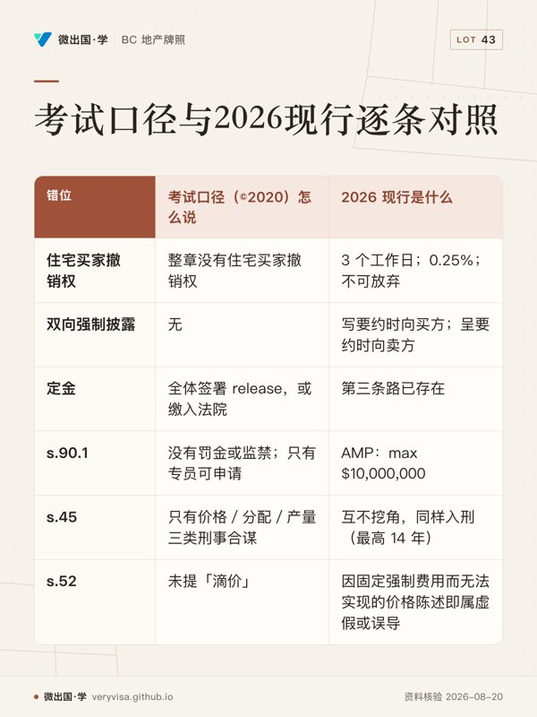

🃏 Flashcards · 3 闪卡 · 3 张 🖼 Slides · 2 幻灯 · 2 页 ✍️ Questions · 16 刷题 · 16 道
代理法与交易合同 agency-contracts P1 必拿分 P1 Must score
ZH EN ZH + EN
先看这一章怎么考 First, how this chapter is tested
情景定性题：给出一宗口头协议、一方未签字或租期长短不同的租约，考《Law and Equity Act》第59条下合同是「不可执行（not enforceable）」而非「无效（void）」，以及支付定金或合理信赖能否触发例外。 Scenario characterization questions: Presenting an oral agreement, an agreement unsigned by one party, or leases of varying lengths, testing whether the contract under section 59 of the Law and Equity Act is 'not enforceable' rather than 'void', and whether paying a deposit or reasonable reliance can trigger statutory exceptions. 持牌人合规动作题：给出买方止付定金支票、卖方要求隐瞒重大隐蔽缺陷（material latent defect）、或买方指示删去标准转让条款（Standard Assignment Terms），考持牌人按《Real Estate Services Act》及规则必须采取的唯一合规步骤。 Licensee compliance action questions: Presenting scenarios where a buyer stops payment on a deposit cheque, a seller demands concealment of a material latent defect, or a buyer instructs the omission of Standard Assignment Terms, testing the single mandatory compliant step the licensee must take under the Real Estate Services Act and Rules. 条款分类与救济匹配题：给出合同中的条件条款（subject clause）、要害条款（essential term / condition）或次要条款（minor term / warranty），考合同是否已经成立、卖方能否撤回要约、以及违约时无过错方能否终止合同还是只能索赔。 Term classification and remedy matching questions: Presenting contract subject clauses, essential terms (conditions), or minor terms (warranties), testing whether a binding contract has formed, whether a seller can revoke the offer, and whether an innocent party upon breach may terminate the contract or is limited to claiming damages. 最常丢分的陷阱（看到题干信号就警觉） Traps that cost the most marks (watch for the signal in the stem)
无效与不可执行混淆 Confusing void with unenforceable 题干出现口头土地买卖、一方未签字或租期三年及以下的租约，选项同时出现 void、illegal 与 unenforceable。 The question stem features an oral land sale, an agreement unsigned by one party, or a lease for three years or less, with options simultaneously presenting void, illegal, and unenforceable. 中立保管人擅自退定金 Brokerage releasing deposit without authority as stakeholder 题干出现买方要求索回尚未存入的定金支票、通知止付（stop payment）、或一方拒签 release 时另一方索要定金。 The question stem describes a buyer demanding the return of an undeposited deposit cheque, notifying a stop payment, or one party demanding deposit funds while the other refuses to sign a mutual release. 主观条件当成已成立合同 Treating a subjective condition as a binding contract 题干的 subject to 条款完全取决于买方个人喜好或公司总裁批准，且卖方在条件移除前收到更高报价想撤回。 The subject clause in the question stem depends entirely on the buyer's personal taste or corporate president approval, and the seller receives a higher offer and wishes to revoke before subject removal. 本章考点页：导图、要点表、7 道带逐项解析的练习 →
本章地位 ：整门课体量最大的一章，也是持牌人每天真正在做的事——把两个人的口头共识变成一份法院会执行的文件。
核实日期：2026-09-05 ，法条全部回读 BC Laws 与联邦司法部现行文本（各法均标 current to 2026-09-01），出处见文末源表。
考试口径（©2020）在这一章的原理层几乎全部长青，但漏掉了 2023 年 1 月 3 日起 BC 每一份住宅买卖合同都自带的三个工作日撤销权 ，
并且它讲的《竞争法》一节已被 2022–2024 年三轮联邦修法改写。
一笔住宅买卖里至少有两份合同：卖方与经纪行之间的书面服务协议（listing / service agreement） 、
买卖双方之间的买卖合同（Contract of Purchase and Sale, CPS） ，有时还有第三份——买方成交前把权益转给第三人的转让协议（assignment） 。
持牌人拿佣金的法律基础，是这几份文件可被执行 。一份写得漂亮但法院不执行的合同，等于没有。
合同法的一般原理（要约、承诺、对价、行为能力、错误、失实陈述）在另一章；代理关系与义务归属见 ch12；
从条件全部移除到产权登记的那一段流程见 ch24。本篇只管一件事：合同怎么成立、条款怎么写、定金怎么放、条件怎么去、违约怎么办、以及那三个工作日。
一、书面要求：不写字，法院不帮你 本节回答 This section answers 哪些房地产合同必须书面、不写字有何后果及服务协议必填项 Which real estate contracts must be in writing, the consequences of failing to put them in writing, and mandatory contents of service agreements 本章考题 1 Question 1
普通法的默认规则是：合同不必写成文件也有效。口头的、甚至默示的，都算数。
但涉及土地的合同是个大例外——BC 的规则在《Law and Equity Act》（法律与衡平法）第 59 条。
现行 s.59 的四个要点 （BC Laws 现行文本，current to 2026-09-01）：
三年以下的租约不适用 。s.59(2)(a)(b) 把「授予三年或以下租期的合同」与「三年或以下租期的授予」排除在外；
现行文本还多一项 (c)：因法律运作产生或由成文法强加的担保与赔偿承诺也排除。不满足书面要求的合同是「不可执行（not enforceable）」，不是无效、不是可撤销、也不违法。
这个区别在考场上年年出现：合同仍然存在 ，只是法院不给你强制执行的救济。只能对签了字的那一方执行。 s.59(3)(a) 的措辞是「由被主张一方或其代理人签署的书面」。
如果只有买方签了字，卖方可以拿这份文件对买方主张，买方却不能反过来对卖方主张——除非落进下面两个例外。两个例外 ：行为例外 （s.59(3)(b)）：否认合同的一方做过、或默许对方做过某个表明合同存在的行为。
s.59(4) 明写：买方支付定金、或卖方收受定金或部分价款，就是这样的行为 。信赖例外 （s.59(3)(c)）：主张合同的一方合理信赖合同的存在而改变了自己的处境（通常是花了钱），
以至于只有执行合同才能避免不公平的结果。
另外两条容易被忽略的救济与容错：s.59(5) 允许法院在判定合同不可执行时，仍然命令返还所受利益 并补偿已花的钱
（例如命令卖方退还定金、补偿买方为准备过户文件付的律师费）；s.59(7) 明写，漏写一个条款或写错一个条款，
不必然使该书面不满足本条的要求 。
⚠️
「不可执行」≠「不存在」
卷面上最常见的错误答案，是把 s.59 的后果写成「合同无效（void）」。
现行条文用的是 not enforceable ：它可能为其他目的继续存在，只是拿不到强制执行。
服务协议这一侧：现行是 Rules 第 43 条，不是「第 5-1 条」
考试口径在讲书面要求时引用的是「地产服务规则第 5-1 条」。那是 2021 年 8 月 1 日之前的旧编号。
现行《Real Estate Services Rules》是 B.C. Reg. 209/2021 （2021-08-01 生效，此后多次修订，BC Laws 合订本所列最近一次为 2026-10-13 的 B.C. Reg. 84/2026），
对应条文是 第 43 条「Written service agreements required in some cases」 ：
除非准客户明示放弃 ，经纪行在下列三种情形下必须有书面服务协议：向不动产业主提供以出售或其他处分 为目的的交易服务；
向出租物业业主提供出租物业管理服务；向 strata corporation 提供共管物业管理服务。交易服务这一类，协议必须在经纪行代表客户把物业挂出去之前 签妥（Rules s.43(2)(a)）。
协议须由客户与经纪行的授权签署人双方签字 ，并写明八类内容（s.43(4)）：客户姓名与经纪行持牌名；物业地址；生效日；
交易服务协议还必须写明到期日 ；服务的概括描述；报酬及其应付情形；
以及——这一项最值得记——如果部分报酬要由挂牌经纪行付给合作经纪行，协议里必须分别写明：卖方付给挂牌行多少、
挂牌行付给合作行多少、挂牌行自己留多少；没有合作行时，写明卖方付给挂牌行多少 ；最后是个人信息使用与披露条款。
ℹ️
旧条号只用于历史对照，现行题与实务用现行条号
本站自测将服务协议内容与条号辨认分开；正式考试要求以注册课程为准。
但在实务里引一个 2021 年就作废的条号，专业形象与合规记录都要打折。
中文互联网上大量地产攻略至今仍在引 Council Rules 的旧编号。
节末检索小测 · 先别往回翻，凭记忆作答 Quick recall check: answer from memory before scrolling back
A seller signs a written service agreement with a listing brokerage to sell a residential property, and the seller does not waive any statutory requirements. Which of the following statements accurately describes the requirements for this written service agreement?
一位卖方与挂牌经纪行签署书面服务协议以出售住宅物业，且卖方未放弃任何法定要求。下列哪项准确描述了该书面服务协议的要求？
a It may be signed at any time before the Contract of Purchase and Sale is accepted, and only the total commission percentage needs to be stated. ✗ 错误。根据《地产服务规则》（Real Estate Services Rules）第43条（考试口径称旧规则第5-1条），交易服务协议必须在经纪行代表客户把物业挂牌出去之前签妥，且涉及合作经纪行分佣时不能只写总比例，此项混淆了签署时点与披露细则。 Incorrect. Under section 43 of the Real Estate Services Rules (formerly Rule 5-1 under the course manual), a trading services agreement must be signed before the brokerage offers the real estate on behalf of the client. Furthermore, when commission is shared with a cooperating brokerage, the agreement cannot merely state a total percentage. This option confuses timing and disclosure rules.
b It must be signed before the property is offered for sale, and with a cooperating brokerage it must split out what the seller pays, what is passed on and what is kept. ✓ 正确。根据《地产服务规则》第43条（考试口径引用2021年8月1日前的旧编号第5-1条，现行法规为 B.C. Reg. 209/2021 第43条），除非准客户明示放弃，交易类的书面服务协议（written service agreement）必须在挂牌前由双方签署、写明到期日，且在有合作经纪行分佣时必须分别写明：卖方付给挂牌行多少、挂牌行付给合作行多少、以及挂牌行自己留多少。 Correct. Under section 43 of the Real Estate Services Rules (referenced as former Rule 5-1 prior to August 1, 2021, and now enacted under B.C. Reg. 209/2021), unless expressly waived by the prospective client, a written service agreement must be signed by both parties before the property is offered for sale, contain an expiry date, and specifically split out: what the seller pays to the listing brokerage, what the listing brokerage passes on to the cooperating brokerage, and what the listing brokerage retains.
c It is only required if the listing period exceeds three years, mirroring the exemption threshold under section 59 of the Law and Equity Act. ✗ 错误。「三年或以下」是《法律与衡平法》（Law and Equity Act）第59条对短租约（lease for a term of three years or less）排除土地合同书面要求的门槛，与经纪行挂牌服务协议毫无关系，属于典型的「无效与不可执行混淆」及法条串位陷阱。 Incorrect. Three years or less is the threshold under section 59 of the Law and Equity Act exempting short-term leases from the land contract writing requirement; it has no application whatsoever to brokerage listing service agreements. This represents a classic statutory misapplication trap.
d It requires only the seller's signature to comply with the rules, provided the brokerage delivers a copy within three business days after an offer is received. ✗ 错误。书面服务协议必须由客户与经纪行的授权签署人双方签字（signed by both the client and an authorized signatory of the brokerage），并在提供挂牌服务前完成，而非只由卖方单方签字。 Incorrect. A written service agreement must be signed by both the client and an authorized signatory of the brokerage prior to providing listing services, rather than bearing only the seller's signature.
看答案与每个选项的解析 Show the answer and why each option is right or wrong 答案 Answer ：b
二、挂牌前要亲自核的那几件事 本节回答 This section answers 持牌人挂牌前如何核查产权与边界、以及遇到隐蔽缺陷怎么办 How licensees must verify title and boundaries before listing, and how to handle latent defects 本章考题 2 Question 2
考试口径用整整一串判例讲同一件事：持牌人没去土地登记处查一次产权，后果由持牌人承担。
这一部分的原理完全长青，法院的态度几十年没变：
产权检索（title search） 要自己做。要确认登记业主是谁 （客户不是登记业主时，必须要一份书面授权），
以及题上挂了哪些押记（按揭、地役权、路权、留置权）。考试口径援引的判例里，因为没查而让卖方在合同里承诺「交付清洁产权」，
结果卖方根本做不到，经纪行被判赔。面积与边界不要自己量 。用「approximately」「more or less」也救不了写错的数字——考试口径援引的判例里，
深度写错而加了「more or less」的合同仍被判不可执行。要精确边界只有正式测量。环境与历史风险 要主动了解。法院的立场是：持牌人对本地区历史上或地理上的已知问题负有合理知悉的义务 。
在这些普通法义务之上，现行 Rules 还加了一条硬规则 ，考试口径那一节没有把它拎出来讲：
Rules 第 59 条 · 重大隐蔽缺陷（material latent defect）的披露义务 ：
定义（s.59(1)）：合理查看物业发现不了 的重大缺陷，包括——使不动产对居住者危险或潜在危险、不适宜居住、
或不适合某一方取得它的目的（前提是该方已把目的告知持牌人，或持牌人已知悉该目的）；修复代价巨大 的缺陷；
地方政府或其他地方主管部门已发出通知、指出该情形必须或应当整改；以及缺少相应的市政建筑许可等许可 。
义务（s.59(2)）：代表处分方 的持牌人，必须在任何取得/处分协议订立之前 ，及时向交易的所有其他方 披露
自己已知的重大隐蔽缺陷。注意义务方向：披露对象是对方 ，不是自己的客户。
后果（s.59(3)）：客户指示持牌人隐瞒的，持牌人必须拒绝就该笔交易继续提供交易服务。
这条没有「权衡」余地，它写的是 must refuse。
例外（s.59(4)）：对方已从处分方客户那里收到该缺陷的书面披露 的，不必重复披露。
✕
「客户不让说」不是抗辩，是必须退出的信号
这是本章唯一一条把「继续服务」本身变成违规的规则。真遇到时，正确动作只有两个：
说服客户披露；或者停止就该笔交易提供交易服务，并按经纪行流程记录。
节末检索小测 · 先别往回翻，凭记忆作答 Quick recall check: answer from memory before scrolling back
When preparing to list a residential lot, the listing licensee relies on the seller's verbal memory of the lot depth instead of checking a survey, adds the words "more or less" after the depth figure in the contract, and does not conduct a title search. Which statement best describes the legal position?
在准备挂牌一处住宅地块时，挂牌持牌人依赖卖方对地块深度的口头记忆而未核查测量图，在合同深度数字后加上「more or less（左右）」字样，且未做产权检索。下列哪项最准确地描述了其法律处境？
a Adding 'more or less' may not stop a misstated depth from making the contract unenforceable, and skipping the title search leaves the licensee exposed. ✓ 正确。考试资料判例明确指出，持牌人必须亲自做产权检索（title search）以核实登记业主与押记，且切勿自行丈量或轻信口头尺寸；即使在写错的深度数字后加上「more or less」或「approximately」，合同仍可能被法院判为不可执行（unenforceable），未做产权检索导致卖方无法交付清洁产权的后果由持牌人与经纪行承担。 Correct. Course manual precedents emphasize that licensees must personally conduct a title search to verify registered owners and charges, and must never rely on verbal dimensions or amateur measurements. Even if words such as 'more or less' or 'approximately' are added after a misstated depth, the court may still declare the contract unenforceable, leaving the licensee and brokerage liable for failing to verify title and dimensions.
b Adding "more or less" shifts the full legal duty to verify lot boundaries onto the buyer under the doctrine of caveat emptor, completely insulating the seller and licensee. ✗ 错误。在面积与边界写错时，「more or less」并不能免除虚假或错误描述的后果，考试资料援引的判例中加了该词的合同依然被判不可执行。 Incorrect. Adding 'more or less' does not insulate the seller or licensee from the legal consequences of an inaccurate description or misrepresentation; in the leading case cited in the manual, a contract containing that phrase was nonetheless held unenforceable.
c A title search is the exclusive responsibility of the conveyancing lawyer after subject removal, so a listing licensee has no duty to check title before listing. ✗ 错误。挂牌前去土地登记处做产权检索（title search）以确认登记业主身份及按揭、地役权、路权、留置权等押记，是持牌人自己的核心核查义务，不能推给过户律师。 Incorrect. Conducting a title search at the land title office prior to listing to verify registered ownership and investigate mortgages, easements, rights of way, and liens is a fundamental licensee duty that cannot be deferred to a conveyancing lawyer.
d The misstated lot depth is automatically treated as a material latent defect that can be cured by notifying the brokerage's managing broker after completion. ✗ 错误。尺寸写错属于对物业基本事实的失实陈述或错误，并非事后通知经理就能补救的事项。 Incorrect. Misstating lot depth constitutes a material misdescription or misrepresentation of fact that cannot simply be cured by notifying a managing broker after completion.
看答案与每个选项的解析 Show the answer and why each option is right or wrong 答案 Answer ：a
三、CPS 的语法：term、condition、warranty 三个词的四种意思 本节回答 This section answers 怎么区分要害条款、次要条款、条件条款以及新房法定保证口径 How to distinguish essential terms, minor terms, and condition precedents, and course manual new home statutory warranties
BC 的住宅买卖用标准格式合同《Contract of Purchase and Sale》。它由 BC 地产协会与加拿大律师协会 BC 分会共同编制，
是行业格式文本，不是法规 ——所以它会不定期改版，而持牌人有义务永远用当时的最新版 。
（版本号与各条款编号以行业协会当期发布件为准，本篇不引具体版本号与条款编号，理由见文末「本篇有意没给的数字」。）
标准格式的好处不只是省事：普通法有一些默认后果，标准合同用明文把它们改掉了。
最典型的是风险何时转移 ——衡平法上一条老规则认为合同一经生效受益所有权就转到买方、之后房子出事由买方承担；
标准合同用明文条款把这个默认结果推翻，让风险在成交前留在卖方一侧。
术语要分清，因为救济完全不同 ：
同一个 condition，在这一章里至少有三种用法：要害条款、条件条款、以及日常语义上的「状况」。
判断一句话属于哪一类，看的是双方把它当多重要，不是它写在合同的哪一栏。
⚠️
明示保证要写进合同，口头的「屋顶很好」不是保证
卖方在看房时说的话，成交后一般跟不进合同。买方一侧的持牌人若要让客户能在成交后依赖某句话，
正确动作是把它写成合同里的明示保证（express warranty） ，例如「卖方保证屋顶状况良好」。
法院有时会用「附随保证（collateral warranty）」救济，但那要求证明该陈述构成一个确定的、被当真的合同性承诺 ，
而不只是一句诱使对方签约的泛泛之词——门槛很高，不能当作后备方案。
法定保证也存在一条，但考试口径与现行法写法不同，要分开记：
- 考试口径 ：BC 的《Homeowner Protection Act》对非持牌建筑商自建自售新房 的情形，默示卖方向买方作出十年 保证——房屋适宜居住、用料良好、设计与施工具备通常水准。
- 现行法 ：《Homeowner Protection Act》第 23 条规定，持牌住宅建筑商或自建业主（owner builder）与新房卖方 都被视为向新房业主作出一组分段保证：材料与做工至少 2 年 无缺陷、建筑围护结构（含渗水）至少 5 年 、结构至少 10 年 ，从首次签发入住许可之日（或首次入住之日）起算；另外第 22 条要求新房在建成后 10 年内出售须有住房质保保险，自建业主的新房出售前须向买方披露有无质保保险（第 21 条）。
给客户讲新房保障时按现行法的 2-5-10 结构讲，不要只说一句「十年保证」。
节末检索小测 · 先别往回翻，凭记忆作答 Quick recall check: answer from memory before scrolling back
According to the course manual, what statutory warranty does the Homeowner Protection Act imply when a new home is built and sold by an unlicensed builder?
根据课程考试资料（考试口径），当非持牌建筑商自建并出售新房时，《Homeowner Protection Act》默示了什么样的法定保证？
a A 3-business-day guarantee allowing the buyer to rescind the purchase upon paying 0.25% of the purchase price. ✗ 错误。3个工作日及0.25%撤销费是《Property Law Act》第42条下的住宅买家冷静期（Home Buyer Rescission Period），而非《Homeowner Protection Act》的新房质量保证，属于「考试口径与现行新规或楼花混同」陷阱。 Incorrect. The 3 business days and 0.25% fee govern the Home Buyer Rescission Period under section 42 of the Property Law Act rather than new home construction warranties under the Homeowner Protection Act. This illustrates the trap of confusing manual rules with modern regulations.
b A 60-day warranty covering only electrical systems and common property parking allocations. ✗ 错误。60天是《Strata Property Act》下 Form F 付款证明的有效期，与新房法定保证无关。 Incorrect. Sixty days is the validity duration of a Form F Certificate of Payment under the Strata Property Act and has nothing to do with statutory home warranties.
c A 10-year implied warranty by the vendor to the purchaser that the home is fit for habitation, constructed of good materials, and designed and built to normal standards. ✓ 正确。按考试口径，《Homeowner Protection Act》对非持牌建筑商自建自售新房的情形，默示卖方向买方作出十年保证（10-year implied warranty）：房屋适宜居住、用料良好、设计与施工具备通常水准。现行法（《Homeowner Protection Act》第23条）则规定持牌建筑商或自建业主与新房卖方均被视为作出2年材料与做工、5年建筑围护结构（含渗水）、10年结构的分段法定保证。 Correct. Under the course manual position, where a new home is built and sold by an unlicensed builder, the Homeowner Protection Act implies a 10-year warranty from the vendor to the purchaser that the home is fit for habitation, constructed of good materials, and designed and built to normal standards. Under current legislation (section 23 of the Homeowner Protection Act), licensed builders and owner-builders are deemed to provide a tiered 2-5-10 year warranty covering 2 years for materials and labour, 5 years for the building envelope (including water penetration), and 10 years for structural defects.
d No implied warranty of any kind, because standard form Contracts of Purchase and Sale shift all physical risks to the buyer immediately upon signing. ✗ 错误。首先《Homeowner Protection Act》确实设有法定保证；其次标准格式买卖合同（CPS）用明文条款推翻了普通法「签约即转风险」的老规则，让物业风险在成交前留在卖方一侧。 Incorrect. First, the Homeowner Protection Act explicitly provides statutory warranties; second, standard form Contracts of Purchase and Sale expressly reverse the old common law rule that risk passes upon signing, keeping property risk with the seller until completion.
看答案与每个选项的解析 Show the answer and why each option is right or wrong 答案 Answer ：c
四、定金：不是合同成立的要件，却是最容易出事的一格 本节回答 This section answers 定金是不是对价、经纪行以什么身份管钱、以及罚没能否被救济 Whether a deposit is consideration, in what capacity the brokerage holds funds, and whether deposit forfeiture can be granted relief 本章考题 3 Question 3
先破一个流传极广的误解：没交定金合同照样成立。
合同成立要的是要约、承诺与对价；这里的对价是双方互相交换的承诺 ——卖方承诺在成交日移转产权，买方承诺同日付清价款。
定金不是对价，它是诚意金 ：买方违约时可能被没收。
定金一旦交到经纪行手里，它就不再属于任何一方
《Real Estate Services Act》（RESA）现行文本第 27 条与第 28 条：
s.27 ：持牌人必须把为委托人持有或收受的款项及时交给所属经纪行 ；经纪行必须及时存入经纪行信托账户 。
s.27(4) 给了一个例外——全体委托人在独立于交易文件之外的另一份书面协议 中同意不适用，且符合规则设定的条件时可以不入账；
现行 Rules 第 68 条补上了那个条件：款项必须付给、或抬头开给并立即交付给委托人们约定的收款人 。
另有 s.27(4.01)/(4.02)：支票、汇票或本票的抬头是持牌人与经纪行以外 的人，且持牌人只做转交、不做任何其他处置的，也不适用。s.28 ：经纪行把这笔钱放在信托账户里时，不论任何相反的法律规则 ，经纪行是以
stakeholder（中立保管人） 的身份持有，而不是任何一方的代理人 ——除非当事人另有书面约定，或规定的情形出现。
s.28(3) 排除三类：定期规律收取的租金或购买期权项下的款项、《Residential Tenancy Act》下的押金与宠物损坏押金、规定的其他款项。
结果是 ：这笔钱既不是买方的也不是卖方的，经纪行不能凭任何一方的要求把它放出来。
什么情况下钱能从信托账户出来：考试口径说两条，现行是三条
考试口径的口径是：全体当事人签署 release，或者经纪行把钱缴入法院 。这两条现在依然成立，但已经不是全部 。
图：定金能否出账——经纪行以 stakeholder 身份持有定金
现行 RESA s.30(2) 规定，经纪行以 stakeholder 身份持有的款项，只能在以下情形提取：
(a) s.30(1)(a)–(f) 的通用情形（误存款、按 s.29 支付的利息、按 s.31 支付的持牌人报酬、按 s.32 转出的无人认领款、
按 s.33 缴入法院的款、以及按法院命令 支付的款）；
(b) 依交易各方的书面协议 ；
(c) 依本法项下的规定，或依《Property Law Act》第 43 条项下的规定 。
(c) 是新增的第三条出路，它就是为冷静期开的。 见下一节：撤销费与定金余额的划付，正是靠这一条从信托账户里合法出账。
✕
永远不要对买方说「不成交定金自动退给你」
考试口径记录的一个投诉案：买方交了支票后回来说已止付并索回支票，持牌人因为支票还没进信托账户就把它退了。
监管方的裁定是：一收到定金，持牌人就是 stakeholder，只有各方明示同意才能退还 。
支票没存进账户不影响这个身份。买方通知止付的，正确动作是照常存入 ，并立即 把情况告知卖方一侧、建议卖方取得法律意见；
支票被退票（NSF）时同样要立即告知卖方。
只有一种情形可以原样退回：这笔钱根本不是就某笔地产交易应付的 ——例如银行下班后收到的连带支票的要约，
卖方在银行开门前就拒绝了，此时唯一有权取回支票的人就是当初交出它的买方。
🔧
定金放在买方律师那里，对卖方等于没有保障
RESA 的 stakeholder 条款只约束依该法持牌的人。买方的律师不是 该法意义上的 stakeholder，
除非律师另行向卖方作出以 stakeholder 身份保管的承诺（undertaking） ，否则他可以不问卖方就把钱退回给买方。
卖方一侧的持牌人碰到「定金放我律师那儿」的提议，要么坚持入经纪行信托账户，要么先拿到书面承诺。
定金要多少、能不能全部没收
行业惯例的经验值是成交价的 5%–10% 。这不是法律规定，但它在司法审查里是有分量的：
《Law and Equity Act》第 24 条 给了法院一项一般性权力——法院可以对一切罚则与罚没给予救济 ，
并可在给予救济时附加关于费用、开支、损害、补偿等任何它认为适当的条件。
在一宗 1987 年 BC 最高法院的案子里（Lily Joyce Lee v. Nelson Skalbania），买方在「time is of the essence」的合同下未能如期成交，
卖方随后以高出 $31,000 的价格卖给第三人，买方起诉要回 $50,000 定金。法院让卖方留下了定金，理由链条值得整段记住：
法院确实 有权按 s.24 救济罚没，但只在 该金额不是损失的合理预估、且允许卖方保留会构成显失公平（unconscionable） 时才会动用；
合理性以订立合同时为准 ——物业事后升值与它无关。卖方承担「实际损失大于定金」的风险，买方承担「定金大于实际损失」的风险；
法院特别看重合同与延期协议里都写着 time is of the essence 。
⚠️
合同说「定金绝对没收」，也不等于经纪行可以把钱交给卖方
标准合同的时间条款通常写明：买方未如期付清余款时，卖方可选择终止合同，已付款项不可退还、绝对没收给卖方 ，
作为损害赔偿，且不影响卖方的其他救济——但这句话后面还挂着一句「subject to section 28 of the Real Estate Services Act 」。
合同说钱归卖方，RESA 说钱怎么出账。 卖方拿不到买方的签字，仍然只能走书面协议、法院命令或缴入法院。
这是持牌人最容易在客户面前说错的一句话。
节末检索小测 · 先别往回翻，凭记忆作答 Quick recall check: answer from memory before scrolling back
Under a Contract of Purchase and Sale stating that "time is of the essence," a buyer pays a $50,000 deposit (within the customary 5% to 10% range) and then fails to complete on the completion date. The seller terminates the contract, subsequently resells the property to a third party for $31,000 more than the original contract price, and the original buyer sues for relief from forfeiture under section 24 of the Law and Equity Act to recover the $50,000 deposit. Based on BC Supreme Court precedent, what is the outcome?
在一份写明「time is of the essence（时间为要害）」的买卖合同下，买方支付了 $50,000 定金（处于行业惯例 5%–10% 范围内），随后未能在成交日如期完成交易。卖方终止合同，后来以比原合同价高出 $31,000 的价格将物业转售给第三人，原买方依《Law and Equity Act》第24条起诉请求罚没救济以追回 $50,000 定金。根据 BC 最高法院判例，结果如何？
a The buyer recovers the entire $50,000 deposit because the seller suffered no actual loss and profited by $31,000 on the resale. ✗ 错误。在 Lily Joyce Lee v. Nelson Skalbania 判例中，法院明确指出定金合理性以订立合同时为准，物业事后升值与是否救济罚没无关：卖方承担「实际损失大于定金」的风险，买方也承担「定金大于实际损失」的风险。 Incorrect. In Lily Joyce Lee v. Nelson Skalbania, the court clearly held that the reasonableness of a deposit is assessed at the time of contract formation. Subsequent resale gains are irrelevant to granting relief from forfeiture: the seller assumes the risk that actual damages will exceed the deposit, while the buyer assumes the risk that the deposit will exceed actual losses.
b The seller is entitled to retain the $50,000 deposit because reasonableness is judged at the time of contract formation, the contract made time of the essence, and retaining the deposit is not unconscionable. ✓ 正确。根据《Law and Equity Act》第24条及 Lily Joyce Lee v. Nelson Skalbania 案，法院虽有权对罚则与罚没给予救济（relief against penalties and forfeitures），但仅在该金额在订约时不是损失的合理预估、且允许卖方保留会构成显失公平（unconscionable）时才会动用；本案定金合理且写明 time is of the essence，即使卖方事后多卖了 $31,000，卖方仍有权留下 $50,000 定金。 Correct. Under section 24 of the Law and Equity Act and Lily Joyce Lee v. Nelson Skalbania, although the court possesses equitable jurisdiction to grant relief against penalties and forfeitures, it will intervene only if the sum was not a genuine pre-estimate of liquidated damages at the time of contract formation and permitting the seller to retain it would be unconscionable. Here, where the deposit was within customary ranges and time was of the essence, the seller is entitled to retain the $50,000 deposit despite profiting by $31,000 on resale.
c The court must split the $50,000 deposit by deducting the $31,000 resale gain and awarding only the remaining $19,000 to the seller. ✗ 错误。定金不是事后按转售差价多退少补的账目，只要订约时属于合理预估且不构成显失公平，卖方即可全额保留该定金。 Incorrect. A deposit is not an accounting mechanism to be offset by subsequent resale profits; provided it was reasonable when contracted and retention is not unconscionable, the seller may retain the entire deposit.
d The brokerage holding the deposit must immediately transfer the $50,000 to the seller without waiting for a release or court order because the contract says the deposit is absolutely forfeited. ✗ 错误。合同写明「绝对没收（absolutely forfeited）」解决的是实体权利归属，但定金从信托账户出账仍受《Real Estate Services Act》第28条及第30条约束，没有双方书面协议或法院命令，经纪行不得擅自划款，属于「中立保管人擅自退定金」陷阱。 Incorrect. Contractual wording that a deposit is 'absolutely forfeited' governs substantive entitlement between the parties, but disbursement from a trust account remains governed by sections 28 and 30 of the Real Estate Services Act. Without a mutual written release or court order, the brokerage cannot disburse the funds, illustrating the stakeholder release trap.
看答案与每个选项的解析 Show the answer and why each option is right or wrong 答案 Answer ：b
五、三个工作日：考试口径整章没有的那项权利 本节回答 This section answers 住宅买家冷静期的3个工作日、0.25%费用、豁免与双向披露 The 3 business days, 0.25% fee, statutory exemptions, and dual mandatory disclosures under the Home Buyer Rescission Period
2023 年 1 月 3 日起，BC 每一份住宅不动产的买卖合同都自带一项买方撤销权。
考试口径定稿于 2020 年，这项制度在它之后才出现，所以它一个字都没有。这不是术语更新，是多了一整套权利与义务 。
法源与结构
《Property Law Act》第 42 条 （BC Laws 现行文本）：s.42(1) ：住宅不动产的买方，可以在承诺（接受要约）被签署之日起的规定天数内 ，
通过向卖方送达书面撤销通知 撤销买卖合同。s.42(2) ：《REDMA》第 21 条适用的买卖合同不适用本条 （楼花那一套走 REDMA，见下一节）。s.42(3) ：产权已从卖方转移给买方的，不适用 。《Home Buyer Rescission Period Regulation》B.C. Reg. 175/2022 （O.C. 436/2022，2022-07-21 存档，2023-01-03 生效 ）填上全部细节。
天数：3 个工作日，而工作日里不含周六、周日与法定假日
规例 s.4 ：s.42(1) 的规定天数是 3 个工作日（business days） 。
规例 s.2 把 s.42 里的 "days" 定义为 business days，并把 "business day" 定义为「周六与 holiday 以外的日子」 。
关键的一环在另一部法：BC《Interpretation Act》对 "holiday" 的定义里明确包含周日 ，
以及圣诞节、耶稣受难日、复活节星期一、加拿大日、维多利亚日、卑诗省日、劳工节、真相与和解全国纪念日、
国殇日、家庭日、元旦、12 月 26 日等。
两条合起来：3 个工作日实际排除周六、周日与法定假日 。
⚠️
三个工作日不是 72 小时，也不从成交日算
起算点是 acceptance of the offer was signed 的那一天之后 ，不是要约发出日、不是双方谈拢的那一刻、更不是成交日。
周五下午签的合同，周六周日不计，实务上要数到下一周的周三——中间若夹一个法定假日还要再往后推一天。
这条时限用错的直接后果是：以为还能撤销的买方发现自己已经被绑住。
撤销通知怎么送才算数
规例 s.5 ：
通知可以在任何一天送达 ，包括周六与假日（虽然期间本身按工作日计）。
通知必须 载明四项：物业的地址、地号（parcel identifier）或描述；行使撤销权的买方姓名与签名（或电子签名） ；
合同各卖方的姓名；行使撤销权的日期 。
三种送达方式享有送达推定 ：按合同载明的卖方地址挂号邮寄 ；发到合同载明的传真号 ；
发到合同载明的电子邮箱并请求已读回执 。用这三种方式的，发出或传送时即视为送达 。
🔧
「合同上载明的」这五个字决定了通知能不能送到
送达推定挂在合同里写的 地址、传真号、邮箱上。买卖合同的卖方联络信息栏写错、留空或写成中介的邮箱，
三个工作日内客户可能根本无法有效送达。这是一件在准备合同时就要做完的事 ，不是撤销当天才想起来的事。
撤销的代价：成交价的 0.25%
规例 s.6 ：
买方撤销的，必须立即 向卖方支付该合同所载成交价的 0.25% 。
已有定金的 ：这笔钱从定金里先付给卖方 ，付完之后定金余额必须立即付还买方 。s.6(3) 明写：为支付上述两笔款项，可以从经纪行信托账户 中提款。这就是前面 RESA s.30(2)(c) 那条新出路的落点。规例 s.7 ：这项撤销权不可放弃（cannot be waived）。
省政府发布这项制度时给出的换算是：每 $100,000 成交价对应 $250 ；
一套 $1,000,000 的房子行使撤销权，买方要付给卖方 $2,500 。
✕
任何「买方放弃冷静期」的条款都是无效的，写它的人自己有风险
规例第 7 条写死了不可放弃。合同里加一句「买方声明放弃 Home Buyer Rescission Period」不会产生任何法律效果，
却会让客户误以为自己没有这项权利——而准备这份文件的持牌人要为这个误导负责。
哪些住宅算、哪些不算
算 （规例 s.2 定义的 residential real property，七类）：独立屋；半独立屋；联排（townhouse）；
双拼或其他多单元住宅中的公寓单位；《Strata Property Act》意义上的住宅 strata lot ；
固着于土地的活动房屋（manufactured home） ；以及包含住宅使用权或占用权的合作社权益（cooperative interest） 。
不算 （规例 s.3 的四项豁免）：位于租赁土地 上的住宅不动产；住宅不动产的租赁权益 ；
拍卖 出售的住宅不动产；依法院命令或在法院监督下 出售的住宅不动产。
ℹ️
撤销权不是尽职调查条款的替代品
冷静期给的是三个工作日和一张 0.25% 的账单。验房条件、贷款条件仍然要写进合同：
条件不成就时合同终止 ，定金按合同与 RESA 退还，买方不用付那 0.25% 。
持牌人的强制披露义务：Rules 第 57.1 条
冷静期不只是给了买方一项权利，它同时给持牌人加了一项双向 披露义务。
现行 Rules 第 57.1 条 （由 B.C. Reg. 176/2022 增订）：
代表买方 的持牌人，在为买方准备住宅不动产的购买要约时 ，必须向买方 作出披露（s.57.1(2)）。代表卖方 的持牌人，在向卖方呈交住宅不动产的购买要约时 ，必须向卖方 作出披露（s.57.1(3)）。披露必须采用总监（superintendent）批准的表格 ，并载明关于《Property Law Act》第 42 条撤销权的以下细节（s.57.1(4)）：
该撤销权不可放弃 ；可以行使该权利的期间 ；买方行使撤销权须向卖方支付的金额如何计算、何时付、怎么付 ；从定金中付给卖方之后，定金余额必须退还买方 ；该撤销权的豁免情形 。s.57.1(1) 里的 "residential real property" 直接沿用上面那部规例第 2 条的定义——两边是同一张清单 。
🔧
这项义务的触发点不是「成交」，是「写要约」和「呈要约」
买方一侧在动笔写 offer 的那一刻 就要披露；卖方一侧在把 offer 递到卖方面前的那一刻 就要披露。
很多人把它当成签约后的手续，那就已经晚了。
节末检索小测 · 先别往回翻，凭记忆作答 Quick recall check: answer from memory before scrolling back
A buyer and seller are negotiating the purchase of a freehold detached house in BC. To make the offer more attractive in a competitive market, the buyer asks their licensee to insert a clause stating that the buyer waives the Home Buyer Rescission Period under section 42 of the Property Law Act. How must the licensee respond?
买卖双方正在洽谈购买 BC 省一处自有产权独立屋。为了让要约在竞争激烈的市场中更有吸引力，买方要求其持牌人在合同中加入一条声明「买方放弃《Property Law Act》第42条下的住宅买家冷静期」。持牌人应当如何回应？
a Draft the waiver clause as requested, provided the buyer also increases the deposit to at least 10% of the purchase price. ✗ 错误。根据《Home Buyer Rescission Period Regulation》第7条，这项撤销权在法律上不可放弃（cannot be waived），无论定金提高到多少，放弃条款都无效。 Incorrect. Under section 7 of the Home Buyer Rescission Period Regulation, this rescission right cannot be waived by contract; regardless of how high the deposit is raised, any waiver clause is legally void.
b Advise the buyer that the rescission right cannot be waived only if the purchase price exceeds $1,000,000. ✗ 错误。$1,000,000 只是省府用来演示 0.25% 撤销费（对应 $2,500）的示例金额，冷静期不可放弃规则适用于所有受规管的住宅不动产交易，没有价格门槛。 Incorrect. The $1,000,000 figure was merely an illustrative example used by the government to demonstrate the 0.25% rescission fee ($2,500). The non-waivability of the rescission period applies to all regulated residential property transactions without any monetary threshold.
c Draft the waiver clause, because a freehold detached house is one of the four statutory exemptions from the rescission period. ✗ 错误。自有产权独立屋（detached house）明确属于适用冷静期的七类住宅不动产之一；四项法定豁免是：位于租赁土地上的住宅、住宅租赁权益、拍卖出售的住宅、以及依法院命令或监督出售的住宅。 Incorrect. A freehold detached house is expressly one of the seven categories of residential real property covered by the rescission period. The four statutory exemptions are: residential real property on leased land, leasehold interests, sales by auction, and sales under court order or supervision.
d Explain that the 3-business-day rescission right cannot be waived by contract, and give the s.57.1 disclosure when preparing the offer. ✓ 正确。根据《Property Law Act》第42条及《Home Buyer Rescission Period Regulation》第7条，住宅买家冷静期（Home Buyer Rescission Period）的3个工作日撤销权不可放弃（cannot be waived），写进合同也无效且会误导客户；同时代表买方的持牌人必须在为买方准备购买要约时依《Real Estate Services Rules》第57.1条用总监批准表格作出强制披露。（注：2020版考试资料考试口径未收录2023年1月3日生效的冷静期制度，现行法规有此硬性要求。） Correct. Under section 42 of the Property Law Act and section 7 of the Home Buyer Rescission Period Regulation, the 3-business-day right of rescission cannot be waived by contract, and drafting a waiver clause is both of no legal effect and misleading to the client. Furthermore, the buyer's licensee must provide mandatory disclosure on an approved form under section 57.1 of the Real Estate Services Rules when preparing an offer. (Note: The 2020 course manual did not include the rescission regime effective January 3, 2023, which is mandated by current legislation.)
看答案与每个选项的解析 Show the answer and why each option is right or wrong 答案 Answer ：d
六、冷静期 vs 楼花七天：两套制度，不要混 本节回答 This section answers 如何区分转售3个工作日冷静期与REDMA楼花7天撤销权 How to distinguish the 3-business-day resale rescission period from the 7-day REDMA pre-sale rescission right
《REDMA》第 21 条给开发单位（development unit）的买家另一套撤销权，它比冷静期早很多年就存在。
两者互斥 ：《Property Law Act》s.42(2) 明写，REDMA s.21 适用的合同不适用冷静期。
⚠️
楼花的「七天」不是工作日，冷静期的「三天」才是
这两条时限的单位不一样，起算点也不一样。中文攻略里最常见的错误是把两者合并成一句
「BC 买房有 7 天冷静期」——转售没有 7 天，楼花没有 0.25% 。
考场上按各自的法条答；给客户讲的时候，第一句永远是先分清「这是转售还是开发商的新盘」。
REDMA 那一整套（备案、披露声明、定金处理、开发商挪用限制）在监管框架那一章展开，本篇只处理与冷静期的边界。
节末检索小测 · 先别往回翻，凭记忆作答 Quick recall check: answer from memory before scrolling back
How does the purchaser's statutory right of rescission for a development unit marketed by a developer under section 21 of the Real Estate Development Marketing Act (REDMA) differ from the Home Buyer Rescission Period (HBRP) under section 42 of the Property Law Act?
向开发商购买依《Real Estate Development Marketing Act》（REDMA）第21条销售的开发单位（楼花）时，买方的法定撤销权与《Property Law Act》第42条下的住宅买家冷静期（HBRP）有何不同？
a REDMA gives 7 calendar days, no 0.25% fee and survives transfer of title; HBRP gives 3 business days, a 0.25% fee and ends on transfer. ✓ 正确。《Property Law Act》第42(2)条明确规定 REDMA 第21条适用的合同不适用冷静期（HBRP）。REDMA 第21条给的是7个日历日（7 days，非工作日）、从协议成立日与买方书面确认有机会阅读披露声明之日中较晚者起算、不收 0.25% 撤销费、且不因产权已移转而消灭；而 HBRP 是承诺签署日后的3个工作日、须付成交价 0.25% 的撤销费、且产权一旦移转即不适用。 Correct. Section 42(2) of the Property Law Act explicitly excludes transactions governed by section 21 of REDMA from the Home Buyer Rescission Period. Section 21 of REDMA provides 7 calendar days (not business days) running from the later of the agreement date or the date the buyer acknowledged receipt and opportunity to read the disclosure statement, charges no 0.25% fee, and is not extinguished by title transfer. In contrast, the HBRP grants 3 business days following acceptance, requires payment of a 0.25% rescission fee, and ceases to apply once title transfers.
b A buyer of a pre-sale development unit from a developer may use both the 7-day REDMA period and the 3-business-day HBRP sequentially for a total of 10 days. ✗ 错误。两套制度互斥（mutually exclusive）：《Property Law Act》第42(2)条明文排除受 REDMA 第21条规管的买卖合同，不能叠加使用，属于「考试口径与现行新规或楼花混同」陷阱。 Incorrect. The two statutory regimes are mutually exclusive: section 42(2) of the Property Law Act expressly excludes contracts governed by section 21 of REDMA, meaning the periods cannot be stacked sequentially. This illustrates the trap of conflating manual rules with pre-sale regulations.
c The REDMA rescission period is 7 business days excluding weekends and statutory holidays and requires a 0.25% fee paid to the developer. ✗ 错误。REDMA 第21条写的是「7 days（7天）」，不是工作日，且 REDMA 第21条本身不设 0.25% 撤销费。 Incorrect. Section 21 of REDMA specifies 7 calendar days rather than business days and does not impose a 0.25% rescission fee.
d Under REDMA section 21, a buyer who never receives a required disclosure statement loses the right to rescind once 7 days have passed after signing the contract. ✗ 错误。根据 REDMA 第21(3)条，如果买方一直未收到应有的披露声明（disclosure statement），买方可以随时撤销（may rescind at any time），而非7天后丧权。 Incorrect. Under section 21(3) of REDMA, if a purchaser never receives an amendment or disclosure statement they were entitled to receive, they may rescind the contract at any time, rather than losing the right after 7 days.
看答案与每个选项的解析 Show the answer and why each option is right or wrong 答案 Answer ：a
七、条件条款（subject clause）：合同到底成立了没有 本节回答 This section answers 先决与解除条件的区别、如何书面移除条件、以及主观条件的风险 The difference between conditions precedent and subsequent, how to remove conditions in writing, and the risks of subjective clauses 本章考题 4 Question 4
日常里持牌人说的「condition」，几乎都是指条件条款。
先决条件（condition precedent） ：某件事发生之前 ，一方不必履行其主要义务。买方的「subject to 融资」「subject to 验房」都是。解除条件（condition subsequent） ：某件事一旦发生 ，就使一方的主要义务终止。
标准合同的定金条款本身就是个例子——买方未按合同支付定金的，卖方可以选择终止合同 。
怎么移除：必须书面，口头不算
标准合同的条件条款栏通常写明：每一项条件（如已注明）只为注明的一方的利益而设；
除非受益方在指定日期当日或之前以书面通知另一方 声明放弃（waive） 或宣告已成就（declare fulfilled） ，
否则合同即于该时终止，定金依《Real Estate Services Act》退还。
成就（fulfilled） ：条件所要求的事已经发生。验房报告没问题 → 宣告成就。放弃（waived） ：受益方决定不管条件直接推进。买方决定不验房了 → 放弃。口头不算 。条文写的是 written notice given by the benefiting party。
✕
别在拿到书面文件之前建议客户移除条件
考试口径援引的一宗 BC 判例里，条件是「取得房东同意承接现有租约或另订新租约」。房东口头答应了，
持牌人就建议客户移除条件推进交易；房东后来拒签书面租约，买方拒绝成交，被诉。
法院认定持牌人有义务劝阻 客户在那个时点移除条件——因为租期超过三年的租约，
只有书面文件才有约束力，这正是第一节 s.59 的直接应用。
太主观的条件条款，会让合同根本没成立
BC 在这一点上的经典表述来自 1985 年 BC 上诉法院 Wiebe v. Bobsien 一案中 Lambert 法官的意见，它把条件条款分成三类：
客观条件的一个重要副产品 ：合同既然已经成立，法律就会默示 一项条款——享有条件利益的一方
必须公平、诚实、善意地 去促成条件成就。买方若不尽合理努力去申请按揭、放任条件落空，
就构成对这项默示条款的违反，卖方有权把定金作为损害赔偿留下 。
完全主观条件的危险 在一宗 1982 年的案子里演示得很清楚：合同「以公司买方总裁于某日前批准价格与条款为条件」，
卖方在买方总裁批准之前收到一份高得多的报价，于是通知取消。法院认定：由于条件完全主观，
这在法律上从来没有越过要约 阶段，卖方有权在承诺之前撤回，因此卖方赢。
「主观条件等于给了买方一个 option」——这句话通常是错的
option（选择权） 是卖方承诺在某个时点前不撤回要约 的合同。既然它自己也是合同，
它也需要单独的对价 或盖印（seal） 。1991 年 BC 上诉法院 Mark 7 Developments Ltd. v. Peace Holdings Ltd. 一案确认：
定金不能充当这个对价 ——那笔钱要么在成交时充作部分价款，要么在违约时被没收，它撑不起「不撤回」这个承诺。
正因如此，标准合同现在含有一条承诺不可撤回 的条款：双方确认本合同以盖印方式签立 ，
并约定卖方的承诺是不可撤回的，包括在买方成就或放弃条件、行使合同内选择权之前的那段期间。
ℹ️
写条件条款的第一原则：越客观越好
一条条款给买方越多的退出余地，法院越可能认定根本没有合同 。
当一方对是否成交拥有完全的自由裁量 时，约束性合同不存在。
实务写法是把标准放到条款里：「以买方自费取得并认可的验房报告为条件，
该报告未显示累计修复成本超过 $ _ _、且合理地可能对物业的使用或价值造成不利影响的缺陷，期限至
节末检索小测 · 先别往回翻，凭记忆作答 Quick recall check: answer from memory before scrolling back
A buyer enters into a contract to purchase a commercial property, subject to the buyer obtaining the existing landlord's agreement to assume the current five-year lease on or before Friday. On Thursday, the landlord verbally tells the buyer over the phone that he agrees. The buyer's licensee immediately advises the buyer to deliver a written notice waiving the condition. The landlord later refuses to sign a written lease assumption. Did the licensee act properly?
买方签订一份商业物业买卖合同，条件是在周五当日或之前取得现有房东同意承接一份剩余五年的租约。周四，房东在电话里口头告诉买方他同意。买方持牌人立即建议买方发出书面通知放弃该条件。房东后来拒签书面租约承接文件。持牌人的做法是否正确？
a Yes, because a condition precedent can be declared fulfilled verbally or in writing as soon as the landlord gives oral assurances. ✗ 错误。首先移除条件（放弃 waive 或宣告成就 declare fulfilled）必须采用书面通知（written notice）；其次超过三年的租约受《Law and Equity Act》第59条约束，口头同意不具强制执行力。 Incorrect. First, removing a condition precedent (by waiver or declaration of fulfillment) requires written notice; second, a lease exceeding three years is governed by section 59 of the Law and Equity Act, meaning oral consent is not legally enforceable.
b No; a lease over three years must be in writing under LEA s.59, so he should have advised against removing the condition before written consent. ✓ 正确。考试资料援引的 BC 判例表明，超过三年的租约依《Law and Equity Act》第59条必须有书面文件才可执行（enforceable）；在仅拿到房东口头答应、尚未取得有约束力的书面协议前，持牌人有义务劝阻客户移除该先决条件（condition precedent），草率建议移除条件构成失职。 Correct. BC precedents cited in the course manual establish that a lease exceeding three years must be in writing to be enforceable under section 59 of the Law and Equity Act. Before securing an enforceable written agreement from the landlord, a licensee has a professional duty to advise against removing or waiving the condition precedent; advising waiver prematurely constitutes negligence.
c Yes, because once a subject clause is written for the buyer's sole benefit, the seller automatically bears the risk of the third-party landlord changing his mind after waiver. ✗ 错误。一旦受益方（买方）书面通知放弃（waive）条件，合同即成为无条件约束的合同，之后房东拒签的风险完全落在买方自己身上，卖方有权要求买方按期交割。 Incorrect. Once the buyer delivers written notice waiving the condition precedent, the contract becomes unconditionally binding, placing the risk of the landlord changing their mind squarely on the buyer, and the seller can demand completion as scheduled.
d No, because removing a condition precedent always requires the written consent and signature of both the buyer and the seller. ✗ 错误。为某一方单独利益（sole benefit）而设的条件条款，只需由受益方在期限当日或之前向另一方发出书面通知（放弃或宣告成就）即可单方移除，不需要对方签字同意修改合同。 Incorrect. A condition precedent inserted for the sole benefit of one party may be waived or declared fulfilled unilaterally by delivering written notice on or before the specified date, without requiring the seller's signature or formal contract amendment.
看答案与每个选项的解析 Show the answer and why each option is right or wrong 答案 Answer ：b
八、保护卖方的三件套 本节回答 This section answers 卖方接受带条件要约时，预审、设期限与时间条款怎么用 How sellers should pre-screen, set deadlines, and use time clauses when accepting conditional offers
接受一份带条件的要约，等于把物业从市场上撤下来 。后备要约（back-up offer）可以写，但会把第二个买家也绑住，多数情况下不现实。
所以卖方一侧有三件事要做：
预审买方（prequalification） 。持牌人的活儿是确认买方有能力 完成交易。银行与信用社的预批（preapproval）
会给出可贷金额，并常常锁定 60 至 90 天 的利率。拿一份复印件，比听买方口头保证有用得多。给条件设一个明确的期限 。融资类条件要留出合理时间；到期而按揭还没批下来的，
持牌人应当与买方和金融机构复核进度，并让卖方知情、由卖方决定是否延期 。时间条款（time clause，俗称「72 小时条款」） 。这是三件套里唯一有牙齿的一件：
它给卖方一项权利——要求买方比原定日期更早地移除条件 ，逾期合同即终止。时长不必是 72 小时 ，可以谈；卖方通常想要短，买方通常想要长。
启动它要发一份独立于买卖合同的书面通知 ，那份通知不是对合同的修改 。
什么时候可以启动，取决于合同里怎么写。 行业示范条款给了两个选项二选一：
「随时（at any time）」或「在收到另一份可接受的要约后」。签之前就要确认勾的是哪一个 ——
写成后者的，卖方在没有第二份要约之前不能启动。条款里常见的措辞还会写明通知期不含周日与法定假日 。
🔧
建议卖方接受带条件要约时，把「成就的可能性」讲出来
持牌人若建议卖方接受带条件的要约而没有同时建议加上时间条款 ，在某些情形下可能构成过失。
反过来看，时间条款其实也保护买方——没有它，卖方根本不会接受这份要约 。
节末检索小测 · 先别往回翻，凭记忆作答 Quick recall check: answer from memory before scrolling back
A seller accepts an offer subject to financing and includes a standard time clause (often called a "72-hour clause") that checks the box permitting the seller to give notice only "upon receipt of another acceptable offer." Two days later, the seller has not received any other offer, but regrets waiting and instructs the listing licensee to deliver written notice triggering the time clause immediately. Which statement is correct?
卖方接受了一份附带融资条件的要约，并加入了标准时间条款（俗称「72小时条款」），其中勾选了仅允许卖方「在收到另一份可接受的要约后」发出通知的选项。两天后，卖方并未收到其他要约，但不想再等，遂指示挂牌持牌人立即发出书面通知启动时间条款。下列哪项正确？
a The seller may trigger the time clause immediately because every time clause gives the seller an unconditional right to demand subject removal at any time. ✗ 错误。时间条款（time clause）何时可以启动，完全取决于合同里勾选的是哪一个选项：「随时（at any time）」还是「在收到另一份可接受的要约后（upon receipt of another acceptable offer）」。 Incorrect. When a time clause may be invoked depends entirely on which contractual option was selected: 'at any time' or 'upon receipt of another acceptable offer'.
b The seller can trigger the time clause only if both parties sign a formal contract amendment shortening the subject removal date. ✗ 错误。启动时间条款靠的是发出一份独立于买卖合同之外的书面通知（separate written notice），该通知不是对买卖合同的修改（not an amendment），无需买方签字同意。 Incorrect. Invoking a time clause is accomplished by serving a separate written notice; it is not an amendment to the Contract of Purchase and Sale and does not require the buyer's consent or signature.
c The seller cannot trigger the time clause unless and until another acceptable offer is actually received, because that specific trigger option was selected in the contract. ✓ 正确。行业示范的时间条款（time clause）提供「随时（at any time）」与「在收到另一份可接受的要约后」两个二选一选项；既然合同勾选了后者，卖方在没有收到第二份可接受要约之前无权启动该通知要求买方提前移除条件。 Correct. Standard time clauses offer two alternative triggers: 'at any time' or 'upon receipt of another acceptable offer'. Because the parties selected the latter, the seller cannot invoke the time clause to require early condition removal until a second acceptable offer has actually been received.
d The notice period under a time clause is fixed by statute at exactly 72 hours including Sundays and statutory holidays. ✗ 错误。「72小时条款」只是俗称，其时长并非法定固定为72小时，而是由双方协商确定，且示范条款的常见措辞通常写明通知期不含周日与法定假日。 Incorrect. '72-hour clause' is merely a colloquial term; the duration is not statutory but negotiated by the parties, and standard wording commonly excludes Sundays and statutory holidays from the notice period.
看答案与每个选项的解析 Show the answer and why each option is right or wrong 答案 Answer ：c
九、修改合同，以及 time is of the essence 本节回答 This section answers 修改合同为什么需要新对价或盖印、以及延期后严格时限还在不在 Why contract amendments require fresh consideration or a seal, and whether time remains of the essence after an extension
修改（amendment）本身就是一份合同 ，所以它同样需要新的对价或盖印 。
没有新对价、也没有盖印的修改是无偿承诺 ，不可执行。
流程上有三个动作不能省：
先确认「谈一谈」不会被当成违约 ——重开谈判有可能被解读为对现有合同的违反，
所以要先向其他各方确认：就拟议变更进行讨论不会终止 现有合同。谈的过程中反复讲清：原合同仍然有效。 讨论本身不解除任何一方在这期间到期的义务。全体签字、立即送达。 修改必须由原合同的全部当事人 书面同意并签字，签妥后须不迟延地 把副本交给每一方。
time is of the essence （时间是合同的要害）通常是标准合同的明文条款，含义是按时履行本身就是一项要害条款 。
它带来两个后果：
买方未按期付清价款的，卖方可以把合同当作终止 ，并把定金作为损害赔偿留下，且不影响其他救济；
原合同写了 time is of the essence 的，双方事后修改（改成交日、调整日、交房日或条件移除日）时，
法律推定它在修改后的合同里仍然有效 ，除非具体情形使这样推定不公平。
ℹ️
每一份修改都写上这两句
「其余全部条款与条件不变」；「time 仍为本合同之要害」。
这两句不产生新义务，但它们让日后关于「延期是否顺带取消了严格时限」的争论无从发生。
节末检索小测 · 先别往回翻，凭记忆作答 Quick recall check: answer from memory before scrolling back
After entering into a binding Contract of Purchase and Sale that explicitly states "time is of the essence," the buyer and seller sign a written amendment under seal extending the completion date by two weeks, without mentioning the "time is of the essence" clause. Which statement accurately describes the legal effect of this amendment?
在签订一份明确写有「time is of the essence（时间为要害）」的约束性买卖合同后，买卖双方以盖印（under seal）方式签署了一份书面修改协议，将成交日顺延两周，但修改协议中未提及「time is of the essence」字样。下列哪项准确描述了该修改协议的法律效果？
a The amendment is unenforceable because extending a completion date requires a cash payment as fresh consideration and cannot be made binding by seal alone. ✗ 错误。修改协议（amendment）本身是一份合同，需要新的对价（fresh consideration）或盖印（under seal）二者之一即可具备约束力，以盖印方式签署完全有效。 Incorrect. An amendment is itself a contract that requires either fresh consideration or execution under seal to be binding; executing the amendment under seal makes it fully enforceable without cash consideration.
b Merely discussing the proposed extension before signing automatically terminated the original contract as an anticipatory breach. ✗ 错误。虽然重开谈判有被误解为违约的风险（因此实务上应先确认讨论不终止原合同、原合同在讨论期间继续有效），但双方合意签署的延期修改并不会使原合同自动终止。 Incorrect. Although reopening negotiations carries risks of misunderstanding, mutually executing a formal written amendment extending completion does not terminate the original contract or constitute anticipatory breach.
c By extending the completion date without restating "time is of the essence," the parties permanently waived strict compliance with time limits. ✗ 错误。在 BC 省，只要原合同写明了 time is of the essence，双方事后修改成交日、调整日、交房日或条件移除日时，法律推定该严格时限条款在修改后的合同里仍然有效（尽管实务上仍建议显式写上「其余条款不变、time 仍为要害」以防争执）。 Incorrect. In BC, where the original contract provided that time is of the essence, the law presumes that strict compliance with time limits continues to apply to the amended dates, even if not explicitly restated in the amendment.
d It is enforceable, being under seal and signed by all, and time is presumed to remain of the essence unless that would be unjust. ✓ 正确。修改协议（amendment）由全部当事人签署并以盖印（under seal）方式订立，满足合同修改的对价/盖印要求；同时，原合同载明时间为要害（time is of the essence）的，事后修改日期时法律推定其在修改后的合同中继续有效，除非具体情形使该推定不公平。 Correct. The amendment is enforceable because it was signed by all parties under seal, satisfying consideration requirements. Furthermore, where an original contract made time of the essence, that condition is presumed to continue to apply to extended dates unless the circumstances make that presumption unjust.
看答案与每个选项的解析 Show the answer and why each option is right or wrong 答案 Answer ：d
十、转让合同：两条必须写进去的标准条款 本节回答 This section answers 标准转让条款的适用范围、豁免对象、CSAIR报送与税务后果 The scope and exemptions of Standard Assignment Terms, CSAIR reporting requirements, and tax implications 本章考题 5 Question 5
买方在成交前把合同项下的权益转让给第三人，这在楼花与热市里很常见，也是「影子炒楼」问题的载体。
现行 《Real Estate Services Regulation》（B.C. Reg. 506/2004）第 8.2 条 （现行文本 current to 2026-09-01）：
s.8.2(3) ：除非提供服务的对象书面另行指示 ，持牌人为该方拟备、并将呈交给对方的合同中，
必须 包含以下两条（业内称 Standard Assignment Terms）：未经卖方书面同意，本合同不得转让 ；买方或任何后手转让人转让本合同所产生的利润，归卖方所有 。s.8.2(2) ：开发商依 REDMA 销售开发单位的合同不适用 本条（那一侧另有 REDMA 的报送制度）。s.8.2(4)(5) ：代表买方的持牌人若知道将呈交给卖方的合同缺少 上述任一条款，必须另发通知；
持牌人自己要直接或间接取得该不动产 而合同缺少该条款的，同样必须发通知。s.8.2(6) ：该通知必须与合同同时 送达卖方一侧（有卖方持牌人的送给持牌人，没有的直接送卖方）、
必须建议卖方在签署缺少该条款的合同前取得独立的专业意见 、必须采用总监批准的表格 、并且独立于合同之外 。s.8.2(7) ：合同缺少该条款而被呈交给卖方时，代表卖方的持牌人 必须把该通知交给卖方、告知卖方合同缺少该条款，
并告知卖方合同能否被转让、若能转让则有哪些条件、以及卖方是否有权取得转让利润。
⚠️
「标准转让条款」不是法律禁止转让，而是把选择权交回卖方
它不禁止转让，它做两件事：把同意权 给卖方，把转让利润 给卖方。
客户如果确实需要保留转让能力（例如以公司名义接手、或家庭成员加名），
正确路径是由客户书面指示不写入 ，并按 s.8.2(4)–(7) 走完通知流程，而不是悄悄删掉。
住宅 strata lot 的楼花转让另有一层报送 ：省政府建立了 Condo and Strata Assignment Integrity Register（CSAIR，共管物业转让诚信登记册） ，
经《REDMA》及其规例落地，要求开发商收集并报送住宅 strata lot 购买协议的转让信息，报送门户由土地产权与测量管理局运营。
这些信息可与加拿大税务局共享，并用于核定应缴的物业转让税——转让人收取的溢价与费用要计入物业转让税的计税价款 。
（本篇未回读 REDMA 规例中 CSAIR 的适用门槛与报送项，具体门槛以官方现行规例为准。）
还有一个税上的连带后果 ：BC 炒房税明确把楼花合同的转让 算在射程内。
持有不足 730 天就转手的，不论转的是房子还是合同，都可能触发那个税——详见「BC 炒房税」一篇。
节末检索小测 · 先别往回翻，凭记忆作答 Quick recall check: answer from memory before scrolling back
An investor who purchased a pre-sale residential strata lot from a developer under the Real Estate Development Marketing Act (REDMA) one year ago now wishes to assign the purchase agreement to a third party for a profit before completion. Which statement correctly applies to this transaction?
一位投资者一年前依《Real Estate Development Marketing Act》（REDMA）向开发商购买了一套住宅共管物业楼花，现在希望在交割前加价将该购买协议转让给第三人。下列哪项正确适用于该笔交易？
a Section 8.2 does not apply to REDMA developer sales, but the assignment is reported through CSAIR and the premium counts toward Property Transfer Tax. ✓ 正确。《Real Estate Services Regulation》第8.2(2)条明确规定，开发商依 REDMA 销售开发单位的合同不适用标准转让条款（Standard Assignment Terms）的强制写入规定；但住宅 strata lot 购买协议的转让受开发商合同条款约束并须由开发商向共管物业转让诚信登记册（Condo and Strata Assignment Integrity Register, CSAIR）收集报送，且转让人收取的溢价与费用要计入物业转让税（Property Transfer Tax）计税价款，持有不足 730 天转手还可能触发 BC 炒房税。 Correct. Section 8.2(2) of the Real Estate Services Regulation expressly provides that developer contracts for development units under REDMA are exempt from the mandatory Standard Assignment Terms. However, assignments of residential strata purchase agreements are governed by the developer contract, must be collected and reported by the developer to the Condo and Strata Assignment Integrity Register (CSAIR), the assignment profit and fees must be included in the taxable consideration for Property Transfer Tax (PTT), and dispositions within 730 days may trigger the BC home flipping tax.
b Under section 8.2 of the Real Estate Services Regulation, any profit from assigning a REDMA pre-sale contract automatically belongs to the provincial government. ✗ 错误。首先规例第8.2条不适用于开发商依 REDMA 销售开发单位的合同；其次即使在适用第8.2条的二手交易中，标准转让条款也是把转让利润归于卖方（seller），而非归于省政府。 Incorrect. First, section 8.2 of the Regulation does not apply to REDMA developer contracts; second, even in resale transactions where section 8.2 applies, the Standard Assignment Terms direct assignment profits to the seller, not to the provincial government.
c Assigning a pre-sale contract before completion is exempt from the BC home flipping tax even if the original buyer held the contract for fewer than 730 days. ✗ 错误。讲义明确指出，BC 炒房税把楼花合同的转让（assignment）算在射程内，持有不足 730 天就转手的，不论转的是房子还是合同都可能触发该税。 Incorrect. The BC home flipping tax specifically includes assignments of pre-sale contracts; transferring a contract held for fewer than 730 days may trigger the tax regardless of whether it involves a completed dwelling or a contractual right.
d The assignment premium paid to the assignor is excluded from the taxable consideration for Property Transfer Tax purposes upon completion. ✗ 错误。转让人收取的溢价与费用（assignment profit and fees）必须计入物业转让税（Property Transfer Tax）的计税价款，且 CSAIR 的数据可与加拿大税务局共享。 Incorrect. Assignment profits and fees paid to an assignor must be added to the gross taxable consideration when calculating Property Transfer Tax payable by the ultimate assignee upon completion.
看答案与每个选项的解析 Show the answer and why each option is right or wrong 答案 Answer ：a
十一、违约与救济：谁能做什么 本节回答 This section answers 买方何时能请求具体履行、以及误判对方违约而提终止有什么风险 When a buyer can seek specific performance, and the legal risks of terminating upon an erroneous claim of breach
🔧
「我们终止合同」这句话，说的人要先想清楚谁在违约
无过错方才有终止权。误判的一方发出终止通知，自己反而构成毁约（repudiation），让对方获得终止＋索赔的权利。
真到这一步，持牌人的正确动作是把客户送去律师那里 ，不是替客户判断谁在违约。
节末检索小测 · 先别往回翻，凭记忆作答 Quick recall check: answer from memory before scrolling back
After all conditions precedent have been properly removed in a Contract of Purchase and Sale for a residential parcel, the seller changes her mind and refuses to transfer title on the completion date. Why can the buyer ask the court for an order of specific performance rather than being limited to monetary damages?
在一份住宅地块买卖合同的所有先决条件均已妥善移除后，卖方改变主意，拒绝在成交日移转产权。为什么买方可以向法院请求具体履行（specific performance）命令，而不限于只拿金钱损害赔偿？
a Because section 28 of the Real Estate Services Act requires specific performance whenever a deposit is held by a brokerage as a stakeholder. ✗ 错误。《Real Estate Services Act》第28条只规定经纪行以中立保管人（stakeholder）身份保管定金，与法院是否判决具体履行无关。 Incorrect. Section 28 of the Real Estate Services Act governs the brokerage's stakeholder capacity for holding deposits and has no bearing on whether a court grants specific performance.
b Because the law regards each parcel of land as unique, making monetary damages alone an inadequate remedy when a seller refuses to convey title. ✓ 正确。在合同法与衡平法救济中，由于每一块土地都被认为是独一无二的（each parcel of land is considered unique），当卖方违约拒绝移转土地时，无过错的买方可以向法院请求具体履行（specific performance），强制卖方按合同完成产权过户。 Correct. In contract law and equitable remedies, because each parcel of land is historically regarded as unique, monetary damages alone are presumed inadequate when a seller refuses to convey title, entitling the innocent buyer to apply for an order of specific performance compelling the transfer.
c Because specific performance is automatically granted for any breach of a minor warranty, even if the seller is willing to transfer title. ✗ 错误。违反次要条款（minor term / warranty）时，无过错方只能索赔损害赔偿（damages），这与卖方拒不移转土地时买方请求具体履行完全不同，属于「条款性质与违约救济错配」陷阱。 Incorrect. A breach of a minor warranty entitles an innocent party only to monetary damages, which is completely distinct from a total refusal by a seller to convey title. This illustrates the trap of mismatching term classification with remedies.
d Because any party who sends a termination notice first is automatically treated by the court as the innocent party entitled to specific performance. ✗ 错误。只有无过错方才有权在对方违反要害条款时终止合同；如果一方误判形势、在对方并未违反要害条款时贸然发出终止通知，发通知的人自己反而构成毁约（repudiation）。 Incorrect. Merely sending a termination notice first does not confer innocent status; an erroneous termination issued without an underlying essential breach constitutes wrongful repudiation by the issuing party.
看答案与每个选项的解析 Show the answer and why each option is right or wrong 答案 Answer ：b
十二、Strata 交易：要写进条件条款里的那几份文件 本节回答 This section answers Form B与Form F时限、保险例外及开发商7%扣款 Time limits for Form B and Form F, the insurance summary exception, and the developer 7% lien holdback
买方买的是 strata lot 时，条件条款里通常要写明「以买方取得并认可下列文件为条件」。
下面这几项是现行《Strata Property Act》（SPA）与其规例（B.C. Reg. 43/2000）规定的：
Form B · 信息证书（Information Certificate，SPA s.59）
strata corporation 须在业主、买方或其授权人提出请求后一周内 出具（s.59(1)）。
须披露的内容包括（s.59(3)）：月度 strata fee；业主欠款；业主承担改建费用的协议；已批准的将来特别摊派金额与缴付日；
本财政年度预计超支金额；应急储备金余额减去已批准未支出的金额；尚未在土地登记处登记的章程修订；
已通过但尚未登记的 3/4 或全体一致决议；已通过的清盘决议 ；已发出通知但尚未表决的重大决议；
strata corporation 涉及的诉讼、仲裁或裁判庭程序及针对它的判决与命令；未了结的通知与整改令；
分配给该单位的停车位与储物柜 ；以及strata corporation 保险承保范围的摘要 。
必须附上的文件 （s.59(4)）：strata corporation 的规则（rules） 、当年预算 、
以及依 s.94 取得的最近一次折旧报告（depreciation report） （如有）。规例里的 Form B 表格另有一栏对应 SPA s.59(3)(m)：strata corporation 是否已依 s.94.1 取得电气规划报告 ，
取得的须附上。该栏由 B.C. Reg. 261/2023 加入。
表格的一个项目已被废除 ：Form B 原来的 (l) 项由 B.C. Reg. 6/2023 s.6(a) 删去
（背景是出租与年龄限制章程的废止，见「Strata 出租与年龄限制」一篇）。
✕
Form B 上的信息对 strata 有约束力——但保险那一栏是例外
SPA s.59(5)：证书上披露的信息，对合理信赖并据以行动的人 具有约束力。
但 s.59(5.1) 明写：s.59(3)(l.2) 的保险信息，若来自 strata corporation 的保险人或保险代理，则不具约束力。
也就是说，买方不能只靠 Form B 上那段保险摘要来判断保障是否足够 ——
这一格要靠自己去核保单。给客户讲的时候，这句话必须讲出来。
Form F · 付款证明（Certificate of Payment，SPA s.115）
业主不欠 strata corporation 的钱、或虽欠但已依 s.114 缴入法院或缴给 strata 保管、
或已作出令 strata 满意的付款安排的，strata corporation 须在请求后一周内 出具。
自签发日起 60 天内有效 （就 s.115 与 s.256 的目的而言）。过户环节要用它，所以它的有效期要和成交日对上。不得把尚未由法院、仲裁或裁判庭确定 的损害赔偿主张写进 Form F（s.115(5)）。
向开发商买 strata lot 时的强制扣款
SPA s.88(2) ：不论任何相反的法律或约定 ，向 owner developer 购买 strata lot 的买方，
必须 扣留规例规定金额的 holdback，扣到下列两个日子中较早 的那一个：
《Builders Lien Act》下留置权申报期届满之日；或该 strata lot 转让给买方之日起第 55 天 。
规例 s.5.2 ：该 holdback 金额为成交总价的 7% 。
s.88(1)：针对该 strata lot 或其在共有财产中份额的建筑留置权申报，也必须在同样两个日子中较早者之前完成
（另一条是转让之日起第 45 天 ）。
s.89：留置权真被登记的，买方可申请把较小的那个数额（全部留置权申报总额 与 s.88(2) 的 holdback 全额，取小）缴入法院，以解除留置权。
ℹ️
这笔 7% 不是买方可以拿来抵扣质量问题的钱
它的唯一目的是把买方对留置权人的责任封顶 。开发商施工有瑕疵或延误的，另有救济路径，
买方不能拿这笔钱当作单方面的扣款。
普通改建的建筑留置权 holdback （不是向开发商买的情形）
《Builders Lien Act》现行文本：合同项下首要付款义务人须扣留工作或材料实际提供价值 与已付款额 中较大者的 10% （s.4(1)）；
holdback 期在完工证明签发后 55 天 、或（无完工证明时）总包合同完成/放弃/终止后 55 天届满（s.8）；
留置权申报期为完工证明签发后 45 天 、或（无完工证明时）总包合同或工程完成/放弃后 45 天（s.20）。
另外 s.35 给善意买方一层保护：在若干时点之后申报的留置权，对买方权益可主张的金额不超过该改建工程成交价的 10% 。
节末检索小测 · 先别往回翻，凭记忆作答 Quick recall check: answer from memory before scrolling back
A buyer is purchasing a residential strata lot and reviews the Form B Information Certificate provided by the strata corporation under section 59 of the Strata Property Act, as well as the rules for a Form F Certificate of Payment and builders lien holdbacks. Which of the following statements is accurate?
一位买方正在购买一套住宅共管物业单位（strata lot），并审阅了共管物业公司依《Strata Property Act》第59条出具的 Form B 信息证书，以及关于 Form F 付款证明与建筑留置权扣款的规则。下列哪项陈述是准确的？
a All information in a Form B is binding on the strata corporation without exception, including the summary of the strata corporation's insurance coverage. ✗ 错误。虽然《Strata Property Act》第59(5)条规定 Form B 披露的信息对合理信赖的人具约束力，但第59(5.1)条明确设了例外：第59(3)(l.2)条下的保险承保范围摘要若来自 strata 的保险人或保险代理，则对 strata 不具约束力，买方必须自行核查保单。 Incorrect. While section 59(5) of the Strata Property Act states that information disclosed in a Form B binds the strata corporation against reasonable reliance, section 59(5.1) creates an explicit exception: a summary of insurance coverage under section 59(3)(l.2) obtained from an insurer or insurance agent does not bind the strata corporation, requiring the buyer to verify the policy independently.
b A Form F Certificate of Payment is valid for 30 days from the date of issue and must include all unliquidated damages claims that the strata council intends to pursue before a tribunal. ✗ 错误。根据《Strata Property Act》第115条，Form F 付款证明须在请求后一周内出具、自签发日起 60 天内有效（而非 30 天），且第115(5)条明确禁止把尚未由法院、仲裁或裁判庭确定的损害赔偿主张写进 Form F。 Incorrect. Under section 115 of the Strata Property Act, a Form F Certificate of Payment is valid for 60 days (not 30 days) from issuance, and section 115(5) expressly prohibits including unadjudicated claims for damages that have not been determined by a court, arbitrator, or tribunal.
c Form B binds the strata toward those who reasonably rely on it except the insurer-sourced insurance summary, and a developer purchase needs a 7% holdback. ✓ 正确。根据《Strata Property Act》第59(5)及(5.1)条，Form B（Information Certificate）必须在请求后一周内出具并附上规则、当年预算、最近一次折旧报告及（如有）电气规划报告，其内容对合理信赖者具约束力，但来自保险人或保险代理的保险摘要除外；此外，依第88(2)条及规例第5.2条，向开发商（owner developer）购买 strata lot 的买方必须扣留成交总价 7% 的留置权扣款（builders lien holdback），直至留置权申报期届满或转让后第55天中较早者。（注：现行 Form B 已由 B.C. Reg. 6/2023 删去原(l)项，并新增停车位/储物柜、保险摘要及 B.C. Reg. 261/2023 的电气规划报告栏。） Correct. Under sections 59(5) and (5.1) of the Strata Property Act, a Form B Information Certificate binds the strata corporation toward those who reasonably rely on it, with the specific exception of an insurance summary obtained from an insurer or agent. Furthermore, under section 88(2) of the Act and Regulation section 5.2, a purchaser buying a strata lot from an owner-developer must retain a 7% builders lien holdback until the earlier of the expiry of the lien filing period or 55 days after transfer. (Note: Modern Form B amendments under B.C. Reg. 6/2023 and 261/2023 added dedicated fields for parking, storage lockers, insurance summaries, and electrical planning reports.)
d When purchasing a brand-new strata lot from an owner developer, the buyer may unilaterally keep the 7% statutory holdback to pay for minor paint touch-ups and construction delays. ✗ 错误。向开发商购买 strata lot 时强制扣留的 7% holdback，唯一法定目的是把买方对建筑留置权人的责任封顶，买方绝对不能拿这笔 7% 当作施工瑕疵或延误的单方面抵扣款。 Incorrect. The mandatory 7% statutory holdback on developer strata purchases exists solely to cap the purchaser's liability to builders lien claimants; it can never be unilaterally retained or used by the buyer to offset minor construction defects or delays.
看答案与每个选项的解析 Show the answer and why each option is right or wrong 答案 Answer ：c
十三、《竞争法》：考试口径那一节被三轮修法改写了 本节回答 This section answers 《竞争法》刑事合谋、误导广告与第90.1条的新旧口径对比 Competition Act criminal conspiracy, misleading advertising, and traditional manual versus current section 90.1 positions
考试口径在这一章里用相当篇幅讲联邦《Competition Act》（竞争法）对广告与同业协议的约束。
原理仍然成立，但具体规则在 2022、2023、2024 三轮修法后已经不同。
刑事一侧：第 45 条
s.45(1) 的三类合谋照旧：与竞争者约定固定/维持/提高/控制价格 、分配销售、地域、客户或市场 、
固定/维持/控制/阻止/减少/消灭产量或供应 。对本行业而言，最典型的就是同业之间就佣金率或划分片区达成默契。s.45(1.1) 是考试口径没有的新罪 ：雇主之间 （非关联雇主）约定
固定、维持、降低或控制薪酬、工资或雇佣条件 ，或互不招揽、互不雇用对方的雇员 ，同样构成刑事罪。
这一款由 2022, c. 10, s. 257 加入。经纪行之间「不挖对方经纪」的君子协定，现在落在刑法一侧。 s.45(2) ：可公诉罪，最高十四年 监禁，或由法院裁量的罚金，或两者并处。
s.45(3) 允许法院从间接证据 推断合谋存在，但合谋仍须达到排除合理怀疑 的证明标准；
s.45(4) 的辅助性协议抗辩（ancillary restraints defence）仍在。
刑事一侧：第 52 条虚假或误导陈述
s.52(1) ：为推广产品或商业利益，以任何方式明知或罔顾地 向公众作出在重要方面 虚假或误导的陈述。s.52(1.1)：定罪不需要 证明有人被欺骗或误导、不需要陈述的受众在加拿大境内、也不需要陈述发生在公众可进入的场所。
s.52(1.3) 是新加的 ：因固定的强制性收费或费用而无法实现的价格陈述，即构成虚假或误导陈述
（业内称 drip pricing / 滴价），除非那些强制费用只是联邦或省立法课加于买方的款项。
这一款由 2022, c. 10, s. 258 加入；该条另于 2024, c. 15, s. 233 再度修订。考试口径援引的旧例（挂牌面积写大、把农业用地写成工业用地）在今天依然是标准形态：
挂牌信息未经核实就发布，罚的是发布的人。
民事一侧：第 90.1 条——考试口径那句「没有罚款」已经不成立
考试口径的原话大意是：与刑事条款不同，s.90.1 之下没有罚金或监禁 ，法庭只能作出禁止令一类的补救命令。
现行条文有三处与之不同 ：
有行政罚款了。s.90.1(1.3) ：竞争裁判庭依 (1) 或 (1.1) 对某人作出命令时，还可以命令其支付行政罚款（AMP） ，
金额不超过下列二者中的较大者 ：
(a) $10,000,000 （其后每一次同类命令不超过 $15,000,000 ）；
(b) 该协议或安排所获利益的三倍 ，或在该数额无法合理确定时，该人全球年度总收入的 3% 。
s.90.1(1.4) 列了裁量因素，s.90.1(1.5) 声明该命令的目的是促使守法而非惩罚 。不再只有竞争事务专员能申请。 现行 s.90.1(1) 的措辞是「on application by the Commissioner
or a person granted leave under section 103.1 」——获得许可的私人也可以提起 。不再要求当事人都是竞争者。s.90.1(1.01) ：裁判庭若认定该协议或安排（或其任何部分）的一个重要目的
是阻止或减少任何市场中的竞争，即使当事人都不是竞争者 ，也可以作出 (1) 项下的命令。
这些修改分别来自 2022, c. 10, s. 263 、2023, c. 31, s. 8 、2024, c. 15, ss. 248 与 271 。
⚠️
旧版是历史证据，正式考试跟进注册课程考试口径与更新
正式考试按注册课程现行考纲及官方更新准备。
但给客户讲、给同业写文件、或经纪行内部定政策时，必须按现行法 ：
民事一侧现在既有巨额行政罚款，也开放了私人申请通道，风险量级和考试口径写的完全不同。
考试口径还有一句「s.90.1 主要是经纪行、地产局与协会的事，个体持牌人不太用担心」——
这句话的后半段今天依然成立（s.45 对个人的适用没有门槛，而 s.90.1 通常要求相当的市场力量），
但前半段的风险量级已经变了。
节末检索小测 · 先别往回翻，凭记忆作答 Quick recall check: answer from memory before scrolling back
A licensee publishes a public advertisement stating that an agricultural parcel is zoned for industrial use and significantly overstating its square footage, having made no effort to verify either claim. Under section 52 of the federal Competition Act, which statement is correct regarding criminal liability for false or misleading representations?
一名持牌人未经任何核实，便发布公开广告将一处农业用地称为工业用地，并大幅夸大其面积。根据联邦《Competition Act》第52条关于虚假或误导陈述的刑事责任，下列哪项是正确的？
a A person cannot be convicted under section 52 unless the prosecution proves that at least one buyer in Canada was actually deceived and suffered a financial loss. ✗ 错误。《Competition Act》第52(1.1)条明确规定，定罪不需要证明实际上有人被欺骗或误导（no need to prove anyone was deceived or misled），也不需要证明受众在加拿大境内。 Incorrect. Section 52(1.1) of the Competition Act explicitly provides that no person needs to have been actually deceived or misled, nor must the representation be made to persons within Canada, to secure a conviction.
b Knowingly or recklessly making a materially false or misleading public representation to promote a business is an offence, even if no one was misled. ✓ 正确。根据《Competition Act》第52(1)及(1.1)条，为推广产品或商业利益而明知或罔顾地（knowingly or recklessly）向公众作出在重要方面虚假或误导的陈述（false or misleading representation in a material respect）即构成犯罪，无需证明有人实际受骗；挂牌面积写大或把农业用地写成工业用地正是考试资料援引的典型违法形态。（注：现行法还于第52(1.3)条新增了「滴价 drip pricing」规则，因固定强制收费而无法实现的价格陈述亦属虚假或误导陈述。） Correct. Under sections 52(1) and (1.1) of the Competition Act, knowingly or recklessly making a representation to the public that is false or misleading in a material respect for the purpose of promoting a business interest constitutes a criminal offence, regardless of whether anyone was actually misled. Misstating lot size or claiming agricultural land is zoned industrial are classic violations cited in the course manual. (Note: Current law under section 52(1.3) also prohibits drip pricing, treating unattainable advertised prices with mandatory fees as misleading representations.)
c Section 52 applies only when two or more competing brokerages conspire together to publish the same advertisement. ✗ 错误。要求两名或以上竞争者合谋（conspiracy）的是第45条刑事合谋罪；第52条虚假或误导陈述罪针对单方发布广告的持牌人或经纪行同样适用。 Incorrect. The requirement for an agreement between two or more competitors applies to criminal conspiracy under section 45; section 52 applies directly to an individual licensee or brokerage publishing misleading representations.
d Because the error concerned zoning and square footage rather than price, it falls outside the Competition Act and is governed solely by municipal bylaws. ✗ 错误。第52条涵盖在任何「重要方面（in a material respect）」的虚假或误导陈述，考试资料中的经典案例正是挂牌面积写大与把农业用地写成工业用地。 Incorrect. Section 52 covers representations that are false or misleading in any material respect; classic exam manual examples specifically involve exaggerating square footage and misrepresenting municipal zoning.
看答案与每个选项的解析 Show the answer and why each option is right or wrong 答案 Answer ：b
十四、考试口径 vs 现行：本章逐条对照 本节回答 This section answers 本章9处新旧差异：冷静期、信托出账、条号、监管机构与竞争法 Nine distinctions between manual and current rules: rescission period, trust disbursements, section numbers, regulators, and competition law
节末检索小测 · 先别往回翻，凭记忆作答 Quick recall check: answer from memory before scrolling back
According to the course manual, in what ways can deposit money held by a brokerage as a stakeholder be released from the brokerage trust account when a transaction fails to complete?
根据课程考试资料（考试口径），当交易未能完成时，经纪行以中立保管人（stakeholder）身份持有的定金可以通过哪几种方式从经纪行信托账户中放出？
a Only in two ways: upon a written release signed by all parties to the transaction, or by the brokerage paying the funds into court. ✓ 正确。按考试资料考试口径，定金从信托账户（trust account）出来只有两条路：全体当事人签署书面解款协议（written release），或者经纪行把钱缴入法院（payment into court）。现行法（《Real Estate Services Act》第30(2)(c)条及《Home Buyer Rescission Period Regulation》第6(3)条）则新增了第三条法定出账路径：依本法或《Property Law Act》第43条项下规定，在买方行使3个工作日住宅冷静期撤销权时，直接从信托账户划付 0.25% 撤销费给卖方并将定金余额退还买方。 Correct. Under the course manual position, there are strictly two ways to release deposit funds from a brokerage trust account: upon a written release signed by all parties, or by payment into court. Modern legislation (RESA section 30(2)(c) and HBRP Regulation section 6(3)) created a third statutory disbursement path: authorizing the brokerage to pay the 0.25% rescission fee to the seller and refund the deposit balance to the buyer when statutory rescission is exercised.
b Whenever the listing brokerage's managing broker determines in good faith which party breached the contract and signs an internal authorization. ✗ 错误。经纪行是中立保管人（stakeholder），无权自行裁断谁违约并单方放款，属于「中立保管人擅自退定金」陷阱。 Incorrect. A brokerage holds funds as a stakeholder and has no legal authority to determine who breached the contract or unilaterally disburse funds. This falls into the stakeholder unauthorized release trap.
c Automatically to the buyer as soon as 30 days have elapsed after the scheduled completion date, unless the seller has already obtained a judgment. ✗ 错误。虽然经纪行可按行业指引向各方发出合理期限（如30天）的书面通知以查明是否有相反主张，但只要有一方不同意，钱就绝不会「自动」退给买方，仍须留存信托账户或缴入法院。 Incorrect. Although brokerages may issue written notices giving parties a time limit to state objections, funds never automatically revert to a buyer if there is any dispute; they must remain in trust or be paid into court.
d Immediately to the seller upon presentation of the Contract of Purchase and Sale showing that the deposit is non-refundable upon default. ✗ 错误。标准合同里的没收定金条款明确写着「subject to section 28 of the Real Estate Services Act」，合同写明没收不等于经纪行可以绕过 RESA 的出账限制把钱直接付给卖方。 Incorrect. Standard contract forfeiture provisions are expressly subject to section 28 of RESA; contractual wording stating that a deposit is forfeited does not allow a brokerage to bypass RESA statutory disbursement restrictions and pay funds directly to the seller.
看答案与每个选项的解析 Show the answer and why each option is right or wrong 答案 Answer ：a
十五、柜台上怎么做：一条时间轴 本节回答 This section answers 从接委托、写要约、呈要约到签约后，持牌人每一步的合规动作 Step-by-step licensee compliance actions from listing engagement and offer drafting to presentation and post-signing
接下卖方委托时
签书面服务协议 （Rules s.43）——挂牌之前，双方签字，八项内容齐全，佣金拆分写清。
去土地登记处查产权 ：登记业主、押记、地役权。客户不是登记业主的，先要书面授权。
面积、边界、许可、环境，能核的自己核；核不了的写清是谁的信息。
已知的重大隐蔽缺陷 ：Rules s.59 的方向是向对方披露 ，客户不让说就停止服务。
准备或收到要约时
写 offer 的同时 向买方作冷静期披露；呈 offer 的同时 向卖方作冷静期披露（Rules s.57.1）。检查卖方联络信息栏 ：撤销通知的送达推定挂在合同上写的地址、传真、邮箱上。
定金条款要写清金额、期限、增加定金的时点、交给谁 。别承诺「不成交自动退」。
标准转让条款 两条要在（Reg s.8.2(3)）；客户书面指示不写的，走 s.8.2(4)–(7) 的通知流程。条件条款尽量客观 ：给日期、给金额门槛、写明「仅为某方利益」。
建议卖方接受带条件要约时，同时建议时间条款 ，并确认合同里勾的是「随时」还是「收到另一份要约后」。
签定之后
承诺一签字，冷静期的三个工作日开始跑 （周六、周日、法定假日不计）。
定金立即 交经纪行入信托账户。买方止付或退票的，照存、并立即告知卖方一侧。
移除条件必须书面 、在期限当日或之前送达。
任何修改：先确认讨论不终止原合同 → 全体签字 → 写上「其余条款不变、time 仍为要害」→ 立即送达各方。
Strata 的，Form B、Form F 与折旧报告要在条件期内拿到并读完，保险摘要那一栏不能只看 Form B 。
交割那一段见「交割」一篇。
节末检索小测 · 先别往回翻，凭记忆作答 Quick recall check: answer from memory before scrolling back
At what exact points in a residential real estate transaction must the buyer's licensee and the seller's licensee make the mandatory disclosures regarding the Home Buyer Rescission Period under section 57.1 of the Real Estate Services Rules, and why must the seller's contact information fields in the contract be completed carefully at that stage?
在住宅不动产交易中，买方持牌人与卖方持牌人必须在什么确切时点依《Real Estate Services Rules》第57.1条作出关于住宅买家冷静期的强制披露？为什么在准备合同时就必须仔细填妥卖方联络信息栏？
a Both licensees must make the disclosure within three business days after the offer is accepted, and the seller's contact information is only needed by the land title office at completion. ✗ 错误。把冷静期披露当成签约后的手续就已经违规晚了；且卖方联络信息栏直接关系到3个工作日内撤销通知能否享受送达推定，绝非等到过户才有用。 Incorrect. Delaying rescission disclosure until after an offer is accepted breaches regulatory timing requirements. Furthermore, seller contact details are critical during the 3-business-day rescission period for deemed delivery and are not merely conveyancing details for closing.
b Only the buyer's licensee is required to make the disclosure before subject removal, while the seller's licensee has no disclosure obligation under section 57.1. ✗ 错误。Rules 第57.1条规定的是买卖双方持牌人的「双向强制披露义务」，卖方持牌人在呈交要约时同样必须向卖方披露。 Incorrect. Section 57.1 of the Rules establishes dual mandatory disclosure duties for both buyer and seller licensees; a seller's licensee is equally required to make the disclosure to the seller when presenting an offer.
c Buyer's licensee discloses when preparing the offer and seller's when presenting it; deemed delivery of rescission depends on the seller contacts in the contract. ✓ 正确。根据《Real Estate Services Rules》第57.1(2)及(3)条，代表买方的持牌人必须在为买方准备住宅购买要约时（when preparing the offer）向买方披露，代表卖方的持牌人必须在向卖方呈交购买要约时（when presenting the offer）向卖方披露；同时依《Home Buyer Rescission Period Regulation》第5条，挂号邮寄、传真或带已读回执的电邮「发出即视为送达（deemed delivery）」的前提是发往合同上载明的卖方地址、传真号或电子邮箱，因此在起草合同时就必须准确填妥。 Correct. Under sections 57.1(2) and (3) of the Real Estate Services Rules, a buyer's licensee must make the mandatory disclosure when preparing an offer for a buyer, and a seller's licensee must make it when presenting an offer to a seller. Furthermore, under section 5 of the Home Buyer Rescission Period Regulation, service by registered mail, fax, or email with a read receipt benefits from deemed delivery rules only if sent to the specific seller address, fax number, or email stated in the contract, making accurate completion of those fields essential at the drafting stage.
d Both licensees must disclose at the time the listing agreement is signed, and the buyer may send a rescission notice with deemed delivery to any social media account used by the listing brokerage. ✗ 错误。买方在挂牌时还未出现；且享有送达推定的仅限按合同载明的卖方地址挂号邮寄、合同载明的传真号、或合同载明的电子邮箱（请求已读回执）三种法定方式。 Incorrect. A buyer is not yet identified when a listing agreement is signed. Furthermore, deemed delivery applies strictly to registered mail to the address in the contract, transmission to the fax number in the contract, or email to the email address in the contract with a read receipt requested; sending notices to social media accounts does not constitute deemed delivery.
看答案与每个选项的解析 Show the answer and why each option is right or wrong 答案 Answer ：c
十六、三个情景 本节回答 This section answers 如何算准冷静期3个工作日与撤销费、处理止付及区分楼花转售 How to calculate the 3 business days and rescission fee, handle stop payments, and distinguish pre-sale assignments
ℹ️
情景一 · 三个工作日到底数到哪一天
示例：买方 2026 年 4 月 3 日（周五） 傍晚签下对一套 $1,280,000 独立屋的承诺。
这一天不计入；4 月 4 日周六、4 月 5 日周日 都不是工作日；
于是第一个工作日是 4 月 6 日周一 ，第二个是 4 月 7 日周二 ，第三个是 4 月 8 日周三 。
买方要撤销，书面通知须在 4 月 8 日 之前或当天送达卖方，
并按合同上写的地址挂号寄出、或发到合同上写的传真号、或发到合同上写的邮箱并请求已读回执——发出即视为送达。
撤销费 ＝ $1,280,000 × 0.25% ＝ $3,200 。
若买方已交 $40,000 定金，则先从定金里付 $3,200 给卖方，剩下的 $36,800 立即退还买方 ，两笔都从经纪行信托账户出账。
同一段时间里若夹着一个法定假日，第三个工作日就要再往后推一天。
ℹ️
情景二 · 买方止付了定金支票，而卖方不肯签 release
示例：买方交了 $25,000 支票，两天后打电话说已经止付、要拿回支票。
正确动作 ：告诉买方经纪行有义务尽快把支票存入信托账户，然后照存；同时不迟延地 把情况告知卖方一侧，
并建议卖方就其对买方的地位取得法律意见。经卖方同意，可以给买方一个很短的时间补一张本票、银行汇票或汇款。
如果最终交易告吹而卖方拒签 release：经纪行不能把钱退给买方 。
经纪行可以按行业指引向各方发出合理期限（例如 30 天）的书面通知 ，说明拟如何划付、以便发现是否存在相反主张；
但只要有一方不书面同意，钱就只能留在信托账户里，或由经纪行缴入法院 ，或由主张权利的一方起诉。
这就是为什么「不成交定金自动退」这句话不能说。
ℹ️
情景三 · 楼花转让与转售，是两套时钟
示例：客户手上有一份 2025 年从开发商处买入的楼花合同，现在想转手；同时她还在看一套二手联排。
- 楼花那一侧 ：她当初的撤销权是 REDMA 第 21 条的 7 天 ，从「购买协议成立日」与
「开发商取得她书面确认已有机会阅读披露声明之日」中较晚 的那天起算；没有 0.25% 撤销费 ；
而且 REDMA 那一侧的撤销权不因已过户而消灭 。她今天要转让合同，
受开发商合同里的同意条款 约束，并落进 CSAIR 的报送范围。
转让产生的溢价还要计入物业转让税 的计税价款，并可能触发 BC 炒房税 （楼花合同的转让明确在射程内）。
- 二手联排那一侧 ：她一旦签下承诺，就有 3 个工作日 的撤销权，撤销要付 0.25% ，不能放弃 ；
而且产权一旦过户，撤销权即不存在 。
同一位客户，两笔交易，两套完全不同的时限、费用与起算点。
节末检索小测 · 先别往回翻，凭记忆作答 Quick recall check: answer from memory before scrolling back
On Friday, April 3, a seller signs the acceptance of a buyer's offer to purchase a detached house in BC for $1,280,000, and the buyer places a $40,000 deposit into the brokerage trust account. Assuming there are no statutory holidays during the following week, what is the last day for the buyer to serve a written notice of rescission under the Home Buyer Rescission Period, and how must the brokerage disburse the $40,000 deposit if the buyer rescinds?
4月3日（周五），卖方签署接受了买方以 $1,280,000 购买 BC 省一套独立屋的要约，买方将 $40,000 定金存入经纪行信托账户。假设下周没有法定假日，买方依住宅买家冷静期送达书面撤销通知的最后一天是哪一天？若买方行使撤销权，经纪行应如何划付这 $40,000 定金？
a Monday, April 6; the brokerage pays $3,200 to the seller and holds the remaining $36,800 until a court order is obtained. ✗ 错误。周六（4月4日）与周日（4月5日）都不是工作日（business days），4月6日周一只是第1个工作日；且根据规例第6条，扣除撤销费后的定金余额必须立即退还买方，无需等待法院命令。 Incorrect. Saturday, April 4 and Sunday, April 5 are not business days, making Monday, April 6 only the first business day. Furthermore, under section 6 of the Regulation, the deposit balance after deducting the rescission fee must be promptly refunded to the buyer without awaiting a court order.
b Sunday, April 5 at the exact 72-hour mark; the brokerage refunds the full $40,000 to the buyer and the seller must sue the buyer separately for $3,200. ✗ 错误。冷静期是承诺签署之日后的「3个工作日（3 business days）」，不是72小时，且已有定金存储在信托账户时，0.25%撤销费直接从定金中先付给卖方，属于「考试口径与现行新规或楼花混同」陷阱。 Incorrect. The rescission period runs for 3 business days following the date of acceptance, not 72 hours. Furthermore, where deposit funds are held in trust, the 0.25% fee is paid directly from the deposit to the seller. This reflects the trap of confusing rescission rules.
c Friday, April 10; the brokerage pays $2,500 to the seller and refunds $37,500 to the buyer. ✗ 错误。那是把7天楼花期或错误周数套进来了，且 $2,500 是 $1,000,000 房价对应的 0.25% 撤销费，$1,280,000 的 0.25% 应为 $3,200。 Incorrect. This mistakenly applies a 7-day pre-sale period or incorrect week calculation; furthermore, $2,500 represents 0.25% of $1,000,000, whereas 0.25% of $1,280,000 is $3,200.
d Wednesday, April 8; the brokerage pays $3,200 (0.25% of $1,280,000) to the seller from the trust account and immediately refunds the $36,800 balance to the buyer. ✓ 正确。起算点是承诺被签署之日（4月3日周五）之后，4月4日周六与4月5日周日均非工作日（business days），因此第1、第2、第3个工作日分别为4月6日周一、4月7日周二、4月8日周三（若期间夹法定假日则再顺延一天）；撤销费为 $1,280,000 × 0.25% ＝ $3,200，依规例第6条及 RESA 第30(2)(c)条，经纪行从信托账户的 $40,000 定金中先付 $3,200 给卖方，余款 $36,800 立即退还买方。 Correct. The rescission period begins after the date acceptance is signed (Friday, April 3). Saturday, April 4 and Sunday, April 5 are not business days, so the first, second, and third business days are Monday, April 6, Tuesday, April 7, and Wednesday, April 8. The rescission fee is 0.25% of $1,280,000, which equals $3,200. Under section 6 of the Regulation and RESA section 30(2)(c), the brokerage pays $3,200 to the seller from the $40,000 trust deposit and immediately refunds the remaining balance of $36,800 to the buyer.
看答案与每个选项的解析 Show the answer and why each option is right or wrong 答案 Answer ：d
术语双语对照
源表（本篇判据）
本篇有意没给的数字 （没读到官方原文，以官方现行页为准）：
BCFSA 现行批准的冷静期披露表格与转让通知表格的名称与版本号 。Rules s.57.1(4) 与 Reg s.8.2(6)(c) 都只写「总监批准的表格」。
本篇只写规则、不写表格名，表格以 BCFSA 现行发布件为准。标准格式买卖合同的当期版本号与各条款编号 。它是行业协会的格式文本，不属官方一手源，本篇一律用条款内容描述，不引编号。《Homeowner Protection Act》第 23 条的「法规另有规定的例外」范围 （条文写明「except to the extent prescribed by regulation」，规例中的排除项本篇未逐条核对，不给清单）。CSAIR 的适用门槛与报送项 （住宅 strata lot 数量门槛、豁免类别、报送字段）——本篇只写制度存在与用途。SPA s.59 现行内容的各次生效日 （B.C. Reg. 6/2023 与 261/2023 的具体生效日期未逐条核实；本篇只引修订依据，不引生效日）。Wiebe v. Bobsien、Murray McDermid、Mark 7 Developments、Lily Joyce Lee v. Skalbania 四则判例，
本篇采用其法律要旨，未回读判决原文 ，故只用要旨、不引判决段落。
本页知识卡 不看正文也能拿到这一节的核心内容：先看导读，再看图。点图放大，左右翻页。
放大 ⤢ 冷静期与楼花撤销期互斥，天数、费用和放弃规则不同。 先看 先辨交易类型，再看计时单位；这两处一错，后面的费用判断也会跟着错。易漏 还要留意楼花的起算点与过户后效果；这两项没放进图里，不能凭转售规则类推。下一步 去练习做情境题，先判断新盘还是转售，再决定查哪套制度。详情与分享 → 
放大 ⤢ 旧版口径与现行规则已有多处错位，答题要先看题干时期。 先看 先扫有金额、刑事后果和新披露义务的行；这些最容易受旧版记忆干扰。易漏 表只挑六项；监管者、表格栏目等其他变化仍要回正文核对。下一步 去进度标记已更新的知识点，再用模考检查是否仍沿用旧版说法。详情与分享 → 本站依据官方原文自撰 · 出处见正文链接